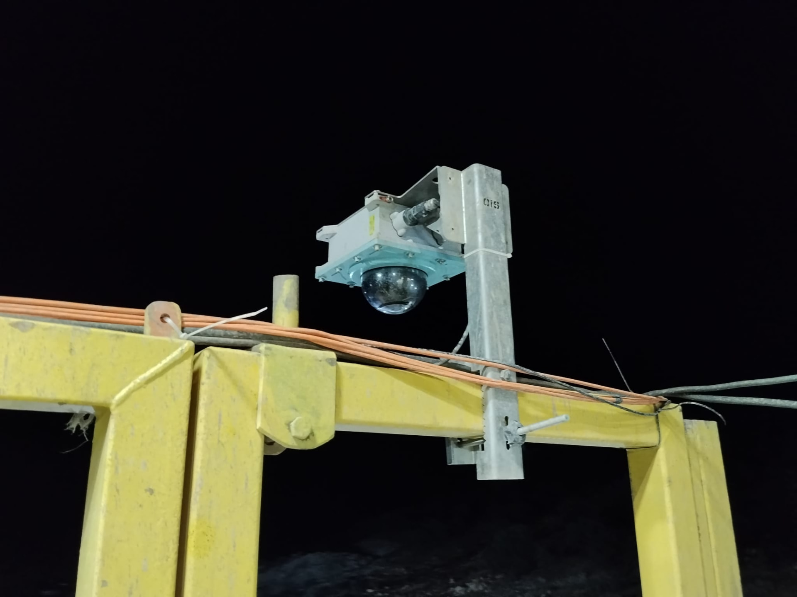
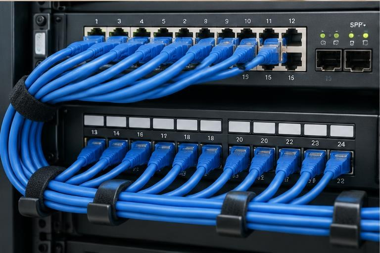
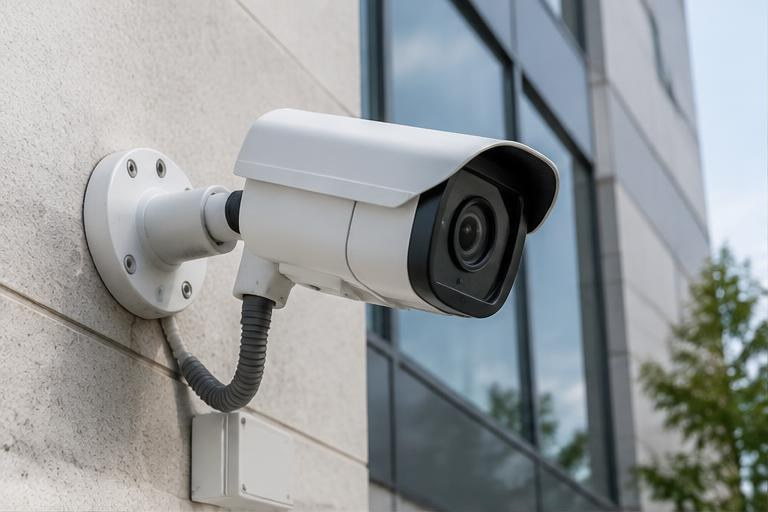
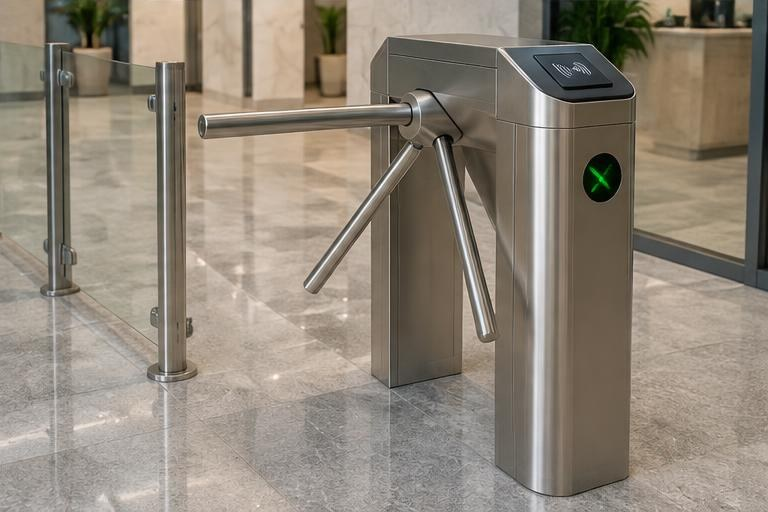
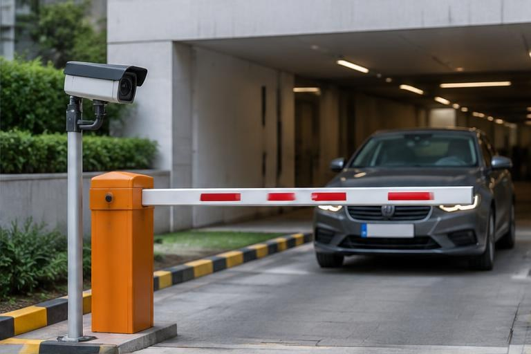
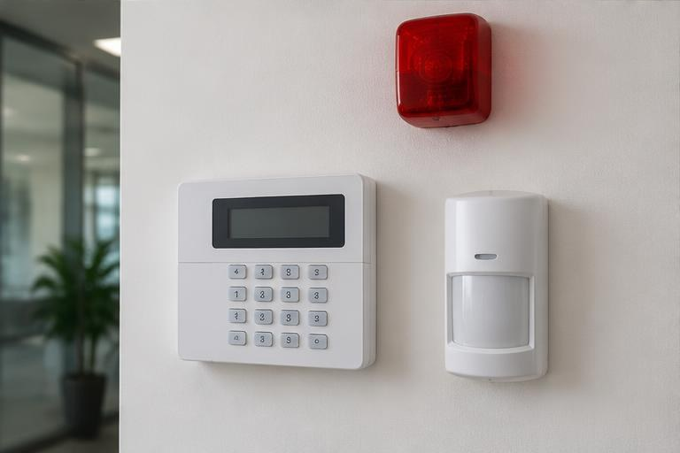
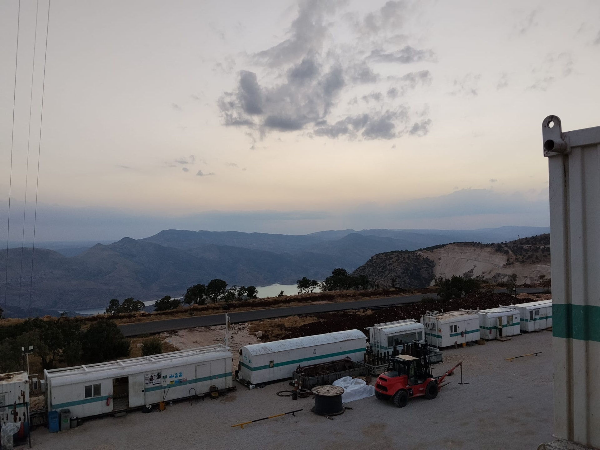
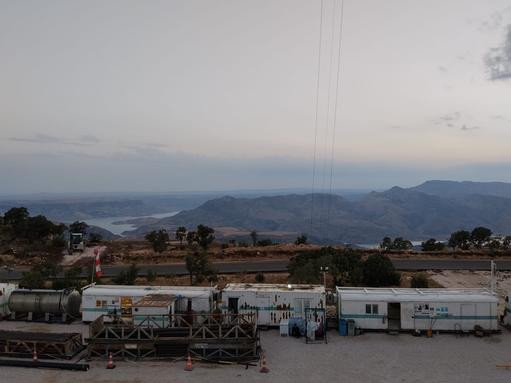
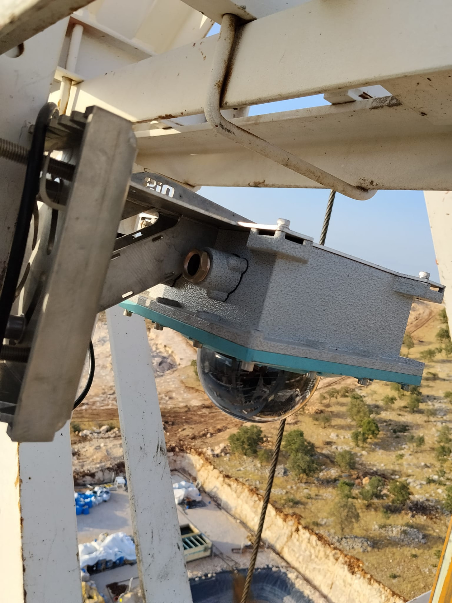

Tamamlanan Proje
Viking Services Kamera Projesi Tamamlandı
DiyarTech’in Viking Services için tamamladığı kamera projesi: açık saha, endüstriyel ekipmanlar ve kamera montajlarından beş gerçek fotoğraf.
DiyarTech Blog

DiyarTech’in Viking Services için tamamladığı kamera projesi: açık saha, endüstriyel ekipmanlar ve kamera montajlarından beş gerçek fotoğraf.

Diyarbakır’daki Hikvision ve Dahua kamera montajlarımız, saha izleme ve kayıt kabini çalışmalarımızdan gerçek fotoğraflar.

Diyarbakır merkezli DiyarTech olarak Arenya Enerji için özel endüstriyel exproof kamera uygulamamızı tamamladık. Sahadan montaj ve ekipman fotoğrafları.
Saha keşfi, kamera yerleşimi, kablolama, kayıt cihazı, mobil izleme ve bakım adımlarını kapsayan kapsamlı kurulum rehberi. Diyarbakır’daki ev ve işletmeler için yerel ihtiyaçları da değerlendirin.

Kamera noktası seçimi, montaj yüksekliği, kayıt senaryosu, ağ güvenliği ve teslim sonrası kontrol listesiyle pratik uygulama rehberi. Diyarbakır’daki ev ve işletmeler için yerel ihtiyaçları da değerlendirin.

PoE kablolu ve Wi-Fi kablosuz kameraların performans, güvenlik, maliyet, bakım ve ölçeklenebilirlik farklarını karşılaştırın. Diyarbakır’daki ev ve işletmeler için yerel ihtiyaçları da değerlendirin.

VLAN segmentasyonu, Wi‑Fi 6 kapsama, firewall, yedeklilik ve kamera ağı ayrımı için kurumsal ağ tasarım rehberi. Diyarbakır’daki ev ve işletmeler için yerel ihtiyaçları da değerlendirin.
Patlayıcı ortam riski bulunan tesislerde exproof kamera seçimi, sertifikasyon, montaj ve bakım kriterlerini inceleyin. Diyarbakır’daki ev ve işletmeler için yerel ihtiyaçları da değerlendirin.

IP ve analog kamera sistemlerini görüntü kalitesi, kayıt altyapısı, maliyet, bakım ve büyüme kapasitesi açısından karşılaştırın. Diyarbakır’daki ev ve işletmeler için yerel ihtiyaçları da değerlendirin.

Mağaza, ofis, depo ve fabrika kameraları için yerleşim, kayıt süresi, personel alanları, KVKK uyarıları ve bakım rehberi. Diyarbakır’daki ev ve işletmeler için yerel ihtiyaçları da değerlendirin.

Apartman, villa ve müstakil evlerde iç-dış kamera seçimi, gece görüşü, mobil bildirim, kayıt ve gizlilik kriterleri. Diyarbakır’daki ev ve işletmeler için yerel ihtiyaçları da değerlendirin.

Personel takibi, ziyaretçi yönetimi, kartlı geçiş, yüz tanıma ve turnike entegrasyonları için kullanım alanları rehberi. Diyarbakır’daki ev ve işletmeler için yerel ihtiyaçları da değerlendirin.

Otopark, site, fabrika ve lojistik girişlerinde plaka tanıma kameralarının çalışma prensibi ve kurulum kriterleri. Diyarbakır’daki ev ve işletmeler için yerel ihtiyaçları da değerlendirin.

Yangın algılama paneli, dedektör yerleşimi, siren, buton, periyodik bakım ve işletme güvenliği için kapsamlı rehber. Diyarbakır’daki ev ve işletmeler için yerel ihtiyaçları da değerlendirin.

Akıllı analiz, yüksek çözünürlük, gece görüşü, kayıt yönetimi ve uzaktan erişim özellikleriyle profesyonel kamera sistemleri. Diyarbakır’daki ev ve işletmeler için yerel ihtiyaçları da değerlendirin.

Kamera sayısı, çözünürlük, FPS, sıkıştırma formatı, hareket algılama ve disk kapasitesine göre kayıt süresi hesabı. Diyarbakır’daki ev ve işletmeler için yerel ihtiyaçları da değerlendirin.

Diyarbakır’da ev, iş yeri, site ve fabrika için kamera kurulumu, bakım, arıza tespiti ve teknik servis süreçleri.
Açık saha ve endüstriyel ekipman çevresindeki kamera uygulamamızdan gerçek proje fotoğrafları.
Diyarbakır merkezli DiyarTech olarak Viking Services için yürüttüğümüz kamera projesini tamamladık. Bu çalışmadan paylaştığımız gerçek fotoğraflarda açık saha, endüstriyel ekipmanlar ve farklı noktalara monte edilen kameralar yer alıyor.
Geniş çalışma sahalarında güvenlik kamerası uygulamaları değerlendirilirken ekipmanların konumu, çalışma bölgeleri ve kameranın görüş yönü birlikte ele alınır. Viking Services projesinden bu kareler, sahanın genel yapısını ve kamera montajlarının fiziksel detaylarını aynı bölümde inceleme imkânı sunuyor.
Gündüz çekilen yakın plan fotoğrafta kamera gövdesi ve metal taşıyıcı bağlantısı; gece çekilen karelerde ise taşıyıcı üzerindeki yerleşim ve endüstriyel ekipmana monte edilen kamera görülüyor. Bunlar sahada çekilmiş proje fotoğraflarıdır; kameraların kayıt görüntüsü veya gece görüş performans testi değildir.



DiyarTech, INOX, Dahua ve Hikvision yetkili bayisidir. Firmamızın İSG, yüksekte çalışma, ustalık belgesi ve temel eğitim belgeleri bulunmaktadır. Diyarbakır’da işletme ve endüstriyel saha kamera ihtiyaçlarınızı yerinde keşif, ekipman seçimi ve teknik servis kapsamıyla birlikte değerlendirebiliriz.
Tamamlanan projeler galerisini inceleyin → · DiyarTech ile iletişim →
Özel endüstriyel exproof kamera uygulamamızı tamamladık.
Diyarbakır merkezli DiyarTech olarak Arenya Enerji için gerçekleştirdiğimiz kamera çalışmasını tamamladık. Bu projede, endüstriyel kullanım için özel exproof kamera çözümü kullandık.
Exproof kamera ve muhafazalar, patlayıcı gaz veya toz riski bulunan endüstriyel ortamlara yönelik özel ekipmanlardır. Uygunluk yalnızca “exproof” ifadesine göre değil; ekipmanın sertifikası, saha sınıflandırması ve üreticinin montaj koşulları birlikte değerlendirilerek belirlenir.
Fotoğraflarda kamera muhafazasının hazırlığı, sahadaki montaj noktaları, bağlantı detayları ve endüstriyel izleme ekranı yer alıyor.


DiyarTech, Diyarbakır merkezli bir güvenlik ve teknoloji firmasıdır; INOX, Dahua ve Hikvision yetkili bayisidir. Kayapınar, Yenişehir, Bağlar, Sur ve Organize Sanayi Bölgesi başta olmak üzere Diyarbakır’ın tüm ilçelerinde ücretsiz yerinde keşif yapıyoruz. Diyarbakır’ın sıcak ve tozlu iklimi, kalın taş duvarlı eski yapıları ve cadde yoğunluğu ekipman seçimini doğrudan etkilediği için her projeyi yerel koşullara göre tasarlıyoruz. Firmamız İSG ve yüksekte çalışma belgelerine sahiptir; kurulum sonrası arıza, bakım ve teknik servis ihtiyaçlarında aynı gün yerel servis desteği sağlıyoruz.
Arenya Enerji için tamamladığımız bu çalışma, endüstriyel kamera uygulamalarımız arasındaki yerini aldı.
DiyarTech ile iletişime geçin →Diyarbakır’da ev, iş yeri, site ve fabrika için kamera kurulumu, bakım, arıza tespiti ve teknik servis süreçleri.
DiyarTech, Diyarbakır merkezli bir güvenlik ve teknoloji firmasıdır; INOX, Dahua ve Hikvision yetkili bayisidir. Kayapınar, Yenişehir, Bağlar, Sur ve Organize Sanayi Bölgesi başta olmak üzere Diyarbakır’ın tüm ilçelerinde ücretsiz yerinde keşif yapıyoruz. Diyarbakır’ın sıcak ve tozlu iklimi, kalın taş duvarlı eski yapıları ve cadde yoğunluğu ekipman seçimini doğrudan etkilediği için her projeyi yerel koşullara göre tasarlıyoruz. Firmamız İSG ve yüksekte çalışma belgelerine sahiptir; kurulum sonrası arıza, bakım ve teknik servis ihtiyaçlarında aynı gün yerel servis desteği sağlıyoruz.
Diyarbakır Güvenlik Kamerası Kurulumu ve Teknik Servis konusu, yalnızca bir ürün satın alma kararı değildir; güvenlik ihtiyacının doğru okunması, risklerin sıralanması ve uzun vadede sorunsuz çalışacak bir altyapının tasarlanması anlamına gelir. Diyarbakır’da ev, mağaza, ofis, depo, site ve fabrika güvenliği planlayan kullanıcılar için yapılan her projede ilk amaç, olay yaşandıktan sonra görüntü aramak değil, olayın oluşma ihtimalini azaltacak caydırıcı ve denetlenebilir bir sistem kurmaktır.
Yanlış planlanan sistemlerde en sık karşılaşılan sorunlar uzaktan alınan standart paketlerin yerel keşif yapılmadan kurulması, arıza halinde hızlı servis bulunamaması ve görüntü kalitesinin beklentiyi karşılamaması olarak öne çıkar. Bu nedenle Diyarbakır güvenlik kamerası kurulumu araması yapan kullanıcıların yalnızca fiyat listesine değil, keşif kalitesine, montaj standardına, ürün uyumluluğuna, kayıt süresine ve satış sonrası desteğe birlikte bakması gerekir. Profesyonel yaklaşım, ihtiyacı küçümsemeden ama gereksiz ekipman da eklemeden doğru dengeyi kurar.
Başarılı bir projede ilk adım keşiftir. Kayapınar, Yenişehir, Bağlar ve Sur gibi farklı yapı tiplerinde cephe, internet altyapısı, elektrik noktası ve kullanım amacı değişebilir. Keşif sırasında yalnızca bugünkü ihtiyaç değil, ileride eklenecek kamera, geçiş kontrol, alarm, ağ veya kayıt kapasitesi de düşünülmelidir. Böylece sistem kısa sürede yetersiz kalmaz ve işletme büyüdüğünde altyapı baştan yapılmak zorunda kalmaz.
Keşif raporunda alan krokisi, cihaz konumları, kablo veya bağlantı güzergâhı, enerji noktaları, internet altyapısı, kayıt merkezi ve kullanıcı yetkileri açıkça belirtilmelidir. Bu rapor hem teklifin şeffaf olmasını sağlar hem de montaj günü yaşanabilecek belirsizlikleri azaltır. Özellikle Diyarbakır kamera servisi, Kayapınar kamera, kamera teknik servis, DiyarTech gibi konularda kararlar keşif verisine göre netleştirilmelidir.
Ekipman seçimi yapılırken marka kadar modelin kullanım alanına uygunluğu önemlidir. İç ortamda çalışan bir cihazı dış cephede kullanmak, yüksek çözünürlüklü bir kamerayı yetersiz kayıt cihazıyla eşleştirmek veya profesyonel bir yazılım gerektiren projede basit çözümlere yönelmek uzun vadede sorun çıkarır. Diyarbakır koşullarına göre yerinde keşif, doğru ekipman seçimi, temiz montaj ve satış sonrası teknik servis süreci yürütmektir.
IP kamera, analog HD, plaka tanıma, alarm, geçiş kontrol ve ağ altyapısı aynı güvenlik planında bütünleşik değerlendirilmelidir. Bu teknik başlıklar teklif aşamasında sade bir dille açıklanmalı, kullanıcı hangi özelliğin hangi problemi çözdüğünü anlayabilmelidir. Örneğin yüksek çözünürlük tek başına yeterli değildir; lens açısı, ışık koşulu, kayıt sıkıştırması, ağ kapasitesi ve bakım kolaylığı aynı bütünün parçalarıdır.
Profesyonel kurulumda cihazın çalışması yeterli kabul edilmez; kablo düzeni, montaj sağlamlığı, bağlantı kutuları, dış ortam dayanımı, etiketleme ve test kayıtları da teslimin parçasıdır. Düzensiz kablo, açıkta kalan konnektör veya yanlış açıyla monte edilmiş cihazlar kısa sürede arıza, görüntü kaybı veya servis ihtiyacı oluşturabilir.
Montaj sırasında kullanıcıların günlük iş akışı da korunmalıdır. İş yerlerinde müşteri trafiğini, evlerde yaşam alanlarını, sitelerde ortak geçişleri aksatmadan çalışmak gerekir. Kurulum tamamlandığında canlı görüntü, kayıt geri sarma, bildirim, yetkilendirme ve yedek senaryoları kullanıcıyla birlikte test edilmelidir. Böylece sistem yalnızca kuran kişinin değil, kullanan kişinin de rahat yönetebileceği hale gelir.
Güvenlik sistemlerinin kendisi de güvenli olmalıdır. Varsayılan şifrelerin değiştirilmesi, kullanıcı bazlı yetki verilmesi, gereksiz hesapların kapatılması ve uzaktan erişimin kontrollü yapılması temel gereklilerdir. Özellikle internet üzerinden izleme yapılacak projelerde güçlü parola, güncel yazılım ve güvenilir bağlantı yöntemi ihmal edilmemelidir.
Gizlilik tarafında ise kameraların veya takip sistemlerinin yalnızca gerekli alanları izlemesi gerekir. Personel, müşteri, komşu veya ziyaretçi mahremiyetini ihlal eden açılar hem etik hem de hukuki risk doğurur. Bu nedenle proje tasarımı yapılırken görünür uyarılar, yetkili erişim listesi, kayıt saklama süresi ve veri paylaşım prosedürü önceden belirlenmelidir.
Bir sistemin değeri, olay anında doğru kayda hızlı ulaşılabildiğinde anlaşılır. Kayıt süresi, görüntü kalitesi, arama kolaylığı, tarih-saat doğruluğu ve yedekleme yöntemi bu yüzden kritik öneme sahiptir. Çok kamera kullanılan projelerde kayıt cihazı kapasitesi ve disk sağlığı düzenli izlenmezse ihtiyaç duyulan görüntüye ulaşılamayabilir.
Uzaktan erişim de aynı şekilde planlı kurulmalıdır. Mobil uygulama kurulumu yapılırken her kullanıcıya aynı yetki verilmemeli, işletme sahibi, yönetici, güvenlik personeli ve teknik servis rolleri ayrılmalıdır. Bildirimler gereksiz alarm üretmeyecek şekilde ayarlanmalı, fakat gerçekten önemli olayları kaçırmayacak hassasiyette bırakılmalıdır.
yerel servis avantajı sayesinde kamera açısı düzeltme, disk değişimi, şifre yenileme ve mobil erişim sorunları hızlı çözülebilir. Bakım yapılmayan sistemlerde sorun çoğu zaman olaydan sonra fark edilir; kamera görüntüsü donmuş, disk arızalanmış, saat yanlış kalmış veya mobil erişim kapanmış olabilir. Düzenli kontrol, bu riskleri büyümeden görmeyi sağlar.
Bakım planı yalnızca arıza çıktığında servis çağırmak değildir. Periyodik bakımda cihaz sıcaklıkları, bağlantılar, güç kaynakları, kayıt süreleri, yazılım sürümleri, kullanıcı hesapları ve fiziksel temizlik kontrol edilir. Bu yaklaşım hem cihaz ömrünü uzatır hem de sistemin en kritik anda çalışır durumda olmasını sağlar.
Fiyat karşılaştırması yapılırken yalnızca cihaz adedine bakmak yanıltıcıdır. Kablo kalitesi, montaj işçiliği, kayıt kapasitesi, garanti, servis hızı, yazılım desteği ve ileride genişleme imkânı toplam maliyeti belirler. Ucuz görünen bir teklif, eksik disk, zayıf adaptör, yetersiz gece görüşü veya sınırlı servis desteği nedeniyle daha pahalıya gelebilir.
Doğru maliyet hesabı, risk seviyesine göre önceliklendirme yapar. Her noktaya en pahalı cihazı koymak gerekmez; fakat kritik alanlarda düşük kaliteli ekipman kullanmak da doğru değildir. Profesyonel teklif, hangi noktada hangi ürünün neden önerildiğini açıklar ve kullanıcıya alternatifli karar verme imkânı sunar.
Diyarbakır’da sıcak, toz, güneş yönü ve cadde yoğunluğu kamera muhafazası, lens açısı ve montaj yüksekliği seçiminde belirleyicidir. Yerel koşulları hesaba katmak, sistemin yalnızca ilk gün iyi görünmesini değil, aylar sonra da aynı performansı korumasını sağlar. Dış ortamda güneş, yağmur, toz, sıcaklık ve kablo güzergâhı cihaz seçimini doğrudan etkiler.
Yerel teknik servis desteği de bu noktada avantaj sağlar. Kurulum sonrası açı değişikliği, kullanıcı eğitimi, arıza tespiti, kayıt süresi güncellemesi veya yeni cihaz ekleme gerektiğinde hızlı müdahale edilebilmesi işletme sürekliliği açısından önemlidir. Bu nedenle Diyarbakır güvenlik kamerası kurulumu hizmeti alınırken yerinde keşif ve ulaşılabilir servis desteği mutlaka değerlendirilmelidir.
Projeye başlamadan önce Ücretsiz keşif, Yerel servis, Dış ortam kamera, Mobil izleme, Bakım planı, Garanti süreci başlıklarının netleşmesi gerekir. Bu maddeler basit görünse de doğru sorular sorulmadığında sistemin performansını doğrudan etkiler. Kontrol listesi, hem teklif veren ekibin hem de hizmet alan kullanıcının aynı beklentide buluşmasını sağlar.
Teslim aşamasında kullanıcıya sistemin nasıl izleneceği, kayıtların nasıl aranacağı, şifrelerin nasıl değiştirileceği ve hangi durumda teknik destek alınacağı gösterilmelidir. Eğitim verilmeyen sistemlerde küçük ayarlar bile zamanla büyük sorunlara dönüşebilir. Bu nedenle kurulumun son adımı mutlaka kullanıcı eğitimi ve yazılı teslim kontrolü olmalıdır.
Diyarbakır Güvenlik Kamerası Kurulumu ve Teknik Servis için en sağlıklı yaklaşım; keşif, doğru ürün seçimi, temiz montaj, güvenli erişim ve düzenli bakım adımlarını tek süreç olarak ele almaktır. Bu bütünlük sağlandığında sistem yalnızca görüntü veren cihazlardan oluşmaz; işletmenin, evin veya tesisin güvenlik yönetimini güçlendiren kalıcı bir altyapıya dönüşür.
DiyarTech, Diyarbakır güvenlik kamerası kurulumu ve ilgili güvenlik teknolojilerinde projeyi sahada değerlendirerek ihtiyaca uygun çözüm üretmeyi hedefler. Doğru tasarlanmış bir sistem; daha net kayıt, daha az arıza, daha kolay yönetim ve daha yüksek caydırıcılık sağlar. Karar vermeden önce keşif yapılması, uzun vadede en doğru bütçe ve en güvenilir sonuç için önemlidir.
Evet. Doğru fiyat ve doğru ekipman için yerinde keşif en sağlıklı yöntemdir.
Kamera, kablo, kayıt cihazı, disk, adaptör, ağ ve kullanıcı erişimi tek tek kontrol edilir.
Apartman, villa ve müstakil evlerde iç-dış kamera seçimi, gece görüşü, mobil bildirim, kayıt ve gizlilik kriterleri.
DiyarTech, Diyarbakır merkezli bir güvenlik ve teknoloji firmasıdır; INOX, Dahua ve Hikvision yetkili bayisidir. Kayapınar, Yenişehir, Bağlar, Sur ve Organize Sanayi Bölgesi başta olmak üzere Diyarbakır’ın tüm ilçelerinde ücretsiz yerinde keşif yapıyoruz. Diyarbakır’ın sıcak ve tozlu iklimi, kalın taş duvarlı eski yapıları ve cadde yoğunluğu ekipman seçimini doğrudan etkilediği için her projeyi yerel koşullara göre tasarlıyoruz. Firmamız İSG ve yüksekte çalışma belgelerine sahiptir; kurulum sonrası arıza, bakım ve teknik servis ihtiyaçlarında aynı gün yerel servis desteği sağlıyoruz.
Diyarbakır’da apartman dairesi, site içi villa ve müstakil ev arasında kamera ihtiyacı büyük fark gösterir. Müstakil evlerde bahçe çevresi ve gece görüşü öne çıkarken, apartmanlarda komşu mahremiyetini ihlal etmeyen açı seçimi önemlidir.
Ev İçin En Uygun Güvenlik Kamerası Nasıl Seçilir? konusu, yalnızca bir ürün satın alma kararı değildir; güvenlik ihtiyacının doğru okunması, risklerin sıralanması ve uzun vadede sorunsuz çalışacak bir altyapının tasarlanması anlamına gelir. apartman dairesi, villa, müstakil ev ve yazlık sahipleri için yapılan her projede ilk amaç, olay yaşandıktan sonra görüntü aramak değil, olayın oluşma ihtimalini azaltacak caydırıcı ve denetlenebilir bir sistem kurmaktır.
Yanlış planlanan sistemlerde en sık karşılaşılan sorunlar sadece fiyat veya görüntü çözünürlüğüne bakılarak alınan kameraların gece görüşü, bildirim kalitesi veya kayıt süresi açısından yetersiz kalması olarak öne çıkar. Bu nedenle ev için güvenlik kamerası araması yapan kullanıcıların yalnızca fiyat listesine değil, keşif kalitesine, montaj standardına, ürün uyumluluğuna, kayıt süresine ve satış sonrası desteğe birlikte bakması gerekir. Profesyonel yaklaşım, ihtiyacı küçümsemeden ama gereksiz ekipman da eklemeden doğru dengeyi kurar.
Başarılı bir projede ilk adım keşiftir. kapı önü, bina girişi, bahçe kapısı, araç park alanı ve çocukların kullandığı dış alanlar öncelikli risk noktalarıdır. Keşif sırasında yalnızca bugünkü ihtiyaç değil, ileride eklenecek kamera, geçiş kontrol, alarm, ağ veya kayıt kapasitesi de düşünülmelidir. Böylece sistem kısa sürede yetersiz kalmaz ve işletme büyüdüğünde altyapı baştan yapılmak zorunda kalmaz.
Keşif raporunda alan krokisi, cihaz konumları, kablo veya bağlantı güzergâhı, enerji noktaları, internet altyapısı, kayıt merkezi ve kullanıcı yetkileri açıkça belirtilmelidir. Bu rapor hem teklifin şeffaf olmasını sağlar hem de montaj günü yaşanabilecek belirsizlikleri azaltır. Özellikle apartman kamera, villa kamera, akıllı kamera, ev kamera sistemi gibi konularda kararlar keşif verisine göre netleştirilmelidir.
Ekipman seçimi yapılırken marka kadar modelin kullanım alanına uygunluğu önemlidir. İç ortamda çalışan bir cihazı dış cephede kullanmak, yüksek çözünürlüklü bir kamerayı yetersiz kayıt cihazıyla eşleştirmek veya profesyonel bir yazılım gerektiren projede basit çözümlere yönelmek uzun vadede sorun çıkarır. evin girişleri, bahçe, balkon, otopark ve ortak alan ilişkisine göre doğru iç-dış ortam kamerası seçmektir.
IP66 gövde, gece görüş mesafesi, hareket algılama, iki yönlü ses, mobil bildirim, hafıza kartı veya NVR kaydı karşılaştırılmalıdır. Bu teknik başlıklar teklif aşamasında sade bir dille açıklanmalı, kullanıcı hangi özelliğin hangi problemi çözdüğünü anlayabilmelidir. Örneğin yüksek çözünürlük tek başına yeterli değildir; lens açısı, ışık koşulu, kayıt sıkıştırması, ağ kapasitesi ve bakım kolaylığı aynı bütünün parçalarıdır.
Profesyonel kurulumda cihazın çalışması yeterli kabul edilmez; kablo düzeni, montaj sağlamlığı, bağlantı kutuları, dış ortam dayanımı, etiketleme ve test kayıtları da teslimin parçasıdır. Düzensiz kablo, açıkta kalan konnektör veya yanlış açıyla monte edilmiş cihazlar kısa sürede arıza, görüntü kaybı veya servis ihtiyacı oluşturabilir.
Montaj sırasında kullanıcıların günlük iş akışı da korunmalıdır. İş yerlerinde müşteri trafiğini, evlerde yaşam alanlarını, sitelerde ortak geçişleri aksatmadan çalışmak gerekir. Kurulum tamamlandığında canlı görüntü, kayıt geri sarma, bildirim, yetkilendirme ve yedek senaryoları kullanıcıyla birlikte test edilmelidir. Böylece sistem yalnızca kuran kişinin değil, kullanan kişinin de rahat yönetebileceği hale gelir.
Güvenlik sistemlerinin kendisi de güvenli olmalıdır. Varsayılan şifrelerin değiştirilmesi, kullanıcı bazlı yetki verilmesi, gereksiz hesapların kapatılması ve uzaktan erişimin kontrollü yapılması temel gereklilerdir. Özellikle internet üzerinden izleme yapılacak projelerde güçlü parola, güncel yazılım ve güvenilir bağlantı yöntemi ihmal edilmemelidir.
Gizlilik tarafında ise kameraların veya takip sistemlerinin yalnızca gerekli alanları izlemesi gerekir. Personel, müşteri, komşu veya ziyaretçi mahremiyetini ihlal eden açılar hem etik hem de hukuki risk doğurur. Bu nedenle proje tasarımı yapılırken görünür uyarılar, yetkili erişim listesi, kayıt saklama süresi ve veri paylaşım prosedürü önceden belirlenmelidir.
Bir sistemin değeri, olay anında doğru kayda hızlı ulaşılabildiğinde anlaşılır. Kayıt süresi, görüntü kalitesi, arama kolaylığı, tarih-saat doğruluğu ve yedekleme yöntemi bu yüzden kritik öneme sahiptir. Çok kamera kullanılan projelerde kayıt cihazı kapasitesi ve disk sağlığı düzenli izlenmezse ihtiyaç duyulan görüntüye ulaşılamayabilir.
Uzaktan erişim de aynı şekilde planlı kurulmalıdır. Mobil uygulama kurulumu yapılırken her kullanıcıya aynı yetki verilmemeli, işletme sahibi, yönetici, güvenlik personeli ve teknik servis rolleri ayrılmalıdır. Bildirimler gereksiz alarm üretmeyecek şekilde ayarlanmalı, fakat gerçekten önemli olayları kaçırmayacak hassasiyette bırakılmalıdır.
ev kullanıcıları için şifre güncellemesi, uygulama yetkileri, kamera camı temizliği ve internet bağlantısı kontrolü pratik bakım adımlarıdır. Bakım yapılmayan sistemlerde sorun çoğu zaman olaydan sonra fark edilir; kamera görüntüsü donmuş, disk arızalanmış, saat yanlış kalmış veya mobil erişim kapanmış olabilir. Düzenli kontrol, bu riskleri büyümeden görmeyi sağlar.
Bakım planı yalnızca arıza çıktığında servis çağırmak değildir. Periyodik bakımda cihaz sıcaklıkları, bağlantılar, güç kaynakları, kayıt süreleri, yazılım sürümleri, kullanıcı hesapları ve fiziksel temizlik kontrol edilir. Bu yaklaşım hem cihaz ömrünü uzatır hem de sistemin en kritik anda çalışır durumda olmasını sağlar.
Fiyat karşılaştırması yapılırken yalnızca cihaz adedine bakmak yanıltıcıdır. Kablo kalitesi, montaj işçiliği, kayıt kapasitesi, garanti, servis hızı, yazılım desteği ve ileride genişleme imkânı toplam maliyeti belirler. Ucuz görünen bir teklif, eksik disk, zayıf adaptör, yetersiz gece görüşü veya sınırlı servis desteği nedeniyle daha pahalıya gelebilir.
Doğru maliyet hesabı, risk seviyesine göre önceliklendirme yapar. Her noktaya en pahalı cihazı koymak gerekmez; fakat kritik alanlarda düşük kaliteli ekipman kullanmak da doğru değildir. Profesyonel teklif, hangi noktada hangi ürünün neden önerildiğini açıklar ve kullanıcıya alternatifli karar verme imkânı sunar.
Diyarbakır’da balkon ve dış cephe kameralarında güneş yönü, yaz sıcaklığı ve tozlanma kamera konumunu etkiler. Yerel koşulları hesaba katmak, sistemin yalnızca ilk gün iyi görünmesini değil, aylar sonra da aynı performansı korumasını sağlar. Dış ortamda güneş, yağmur, toz, sıcaklık ve kablo güzergâhı cihaz seçimini doğrudan etkiler.
Yerel teknik servis desteği de bu noktada avantaj sağlar. Kurulum sonrası açı değişikliği, kullanıcı eğitimi, arıza tespiti, kayıt süresi güncellemesi veya yeni cihaz ekleme gerektiğinde hızlı müdahale edilebilmesi işletme sürekliliği açısından önemlidir. Bu nedenle ev için güvenlik kamerası hizmeti alınırken yerinde keşif ve ulaşılabilir servis desteği mutlaka değerlendirilmelidir.
Projeye başlamadan önce Dış ortam dayanımı, Gece görüşü, Mobil bildirim, Kayıt seçeneği, Gizlilik açısı, İnternet kalitesi başlıklarının netleşmesi gerekir. Bu maddeler basit görünse de doğru sorular sorulmadığında sistemin performansını doğrudan etkiler. Kontrol listesi, hem teklif veren ekibin hem de hizmet alan kullanıcının aynı beklentide buluşmasını sağlar.
Teslim aşamasında kullanıcıya sistemin nasıl izleneceği, kayıtların nasıl aranacağı, şifrelerin nasıl değiştirileceği ve hangi durumda teknik destek alınacağı gösterilmelidir. Eğitim verilmeyen sistemlerde küçük ayarlar bile zamanla büyük sorunlara dönüşebilir. Bu nedenle kurulumun son adımı mutlaka kullanıcı eğitimi ve yazılı teslim kontrolü olmalıdır.
Ev İçin En Uygun Güvenlik Kamerası Nasıl Seçilir? için en sağlıklı yaklaşım; keşif, doğru ürün seçimi, temiz montaj, güvenli erişim ve düzenli bakım adımlarını tek süreç olarak ele almaktır. Bu bütünlük sağlandığında sistem yalnızca görüntü veren cihazlardan oluşmaz; işletmenin, evin veya tesisin güvenlik yönetimini güçlendiren kalıcı bir altyapıya dönüşür.
DiyarTech, ev için güvenlik kamerası ve ilgili güvenlik teknolojilerinde projeyi sahada değerlendirerek ihtiyaca uygun çözüm üretmeyi hedefler. Doğru tasarlanmış bir sistem; daha net kayıt, daha az arıza, daha kolay yönetim ve daha yüksek caydırıcılık sağlar. Karar vermeden önce keşif yapılması, uzun vadede en doğru bütçe ve en güvenilir sonuç için önemlidir.
Gizlilik açısından kamera yalnızca kendi giriş, bahçe veya araç alanınızı izleyecek şekilde konumlandırılmalıdır.
Tek veya az kameralı evlerde kart yeterli olabilir; uzun kayıt ve çok kamera için NVR daha sağlıklıdır.
Patlayıcı ortam riski bulunan tesislerde exproof kamera seçimi, sertifikasyon, montaj ve bakım kriterlerini inceleyin.
DiyarTech, Diyarbakır merkezli bir güvenlik ve teknoloji firmasıdır; INOX, Dahua ve Hikvision yetkili bayisidir. Kayapınar, Yenişehir, Bağlar, Sur ve Organize Sanayi Bölgesi başta olmak üzere Diyarbakır’ın tüm ilçelerinde ücretsiz yerinde keşif yapıyoruz. Diyarbakır’ın sıcak ve tozlu iklimi, kalın taş duvarlı eski yapıları ve cadde yoğunluğu ekipman seçimini doğrudan etkilediği için her projeyi yerel koşullara göre tasarlıyoruz. Firmamız İSG ve yüksekte çalışma belgelerine sahiptir; kurulum sonrası arıza, bakım ve teknik servis ihtiyaçlarında aynı gün yerel servis desteği sağlıyoruz.
Diyarbakır ve çevresindeki enerji, un, yem ve depolama tesislerinde patlayıcı ortam sınıflandırması zorunludur. Arenya Enerji projemizde olduğu gibi exproof kamera seçimini sahanın zone sınıfına ve Diyarbakır’ın sıcak iklim koşullarına göre yapıyoruz.
Exproof Kamera Nedir, Nerelerde Kullanılır? konusu, yalnızca bir ürün satın alma kararı değildir; güvenlik ihtiyacının doğru okunması, risklerin sıralanması ve uzun vadede sorunsuz çalışacak bir altyapının tasarlanması anlamına gelir. akaryakıt istasyonları, kimya tesisleri, enerji sahaları, üretim alanları ve endüstriyel depolar için yapılan her projede ilk amaç, olay yaşandıktan sonra görüntü aramak değil, olayın oluşma ihtimalini azaltacak caydırıcı ve denetlenebilir bir sistem kurmaktır.
Yanlış planlanan sistemlerde en sık karşılaşılan sorunlar standart kameraların kıvılcım, ısı ve gövde dayanımı açısından riskli bölgelerde güvenli kabul edilmemesi olarak öne çıkar. Bu nedenle exproof kamera araması yapan kullanıcıların yalnızca fiyat listesine değil, keşif kalitesine, montaj standardına, ürün uyumluluğuna, kayıt süresine ve satış sonrası desteğe birlikte bakması gerekir. Profesyonel yaklaşım, ihtiyacı küçümsemeden ama gereksiz ekipman da eklemeden doğru dengeyi kurar.
Başarılı bir projede ilk adım keşiftir. Zone sınıfı, gaz-toz riski, ortam sıcaklığı, görüş açısı, kablo rakoru ve bakım erişimi proje başlangıcında belirlenmelidir. Keşif sırasında yalnızca bugünkü ihtiyaç değil, ileride eklenecek kamera, geçiş kontrol, alarm, ağ veya kayıt kapasitesi de düşünülmelidir. Böylece sistem kısa sürede yetersiz kalmaz ve işletme büyüdüğünde altyapı baştan yapılmak zorunda kalmaz.
Keşif raporunda alan krokisi, cihaz konumları, kablo veya bağlantı güzergâhı, enerji noktaları, internet altyapısı, kayıt merkezi ve kullanıcı yetkileri açıkça belirtilmelidir. Bu rapor hem teklifin şeffaf olmasını sağlar hem de montaj günü yaşanabilecek belirsizlikleri azaltır. Özellikle patlayıcı ortam kamerası, ATEX kamera, endüstriyel kamera, zone kamera gibi konularda kararlar keşif verisine göre netleştirilmelidir.
Ekipman seçimi yapılırken marka kadar modelin kullanım alanına uygunluğu önemlidir. İç ortamda çalışan bir cihazı dış cephede kullanmak, yüksek çözünürlüklü bir kamerayı yetersiz kayıt cihazıyla eşleştirmek veya profesyonel bir yazılım gerektiren projede basit çözümlere yönelmek uzun vadede sorun çıkarır. ortam sınıfına uygun sertifikalı exproof kamera, doğru bağlantı ekipmanı ve uzman montaj prosedürü kullanmaktır.
ATEX/IECEx sertifikası, paslanmaz gövde, koruma sınıfı, uygun lens, termal dayanım ve exproof bağlantı elemanları birlikte incelenir. Bu teknik başlıklar teklif aşamasında sade bir dille açıklanmalı, kullanıcı hangi özelliğin hangi problemi çözdüğünü anlayabilmelidir. Örneğin yüksek çözünürlük tek başına yeterli değildir; lens açısı, ışık koşulu, kayıt sıkıştırması, ağ kapasitesi ve bakım kolaylığı aynı bütünün parçalarıdır.
Profesyonel kurulumda cihazın çalışması yeterli kabul edilmez; kablo düzeni, montaj sağlamlığı, bağlantı kutuları, dış ortam dayanımı, etiketleme ve test kayıtları da teslimin parçasıdır. Düzensiz kablo, açıkta kalan konnektör veya yanlış açıyla monte edilmiş cihazlar kısa sürede arıza, görüntü kaybı veya servis ihtiyacı oluşturabilir.
Montaj sırasında kullanıcıların günlük iş akışı da korunmalıdır. İş yerlerinde müşteri trafiğini, evlerde yaşam alanlarını, sitelerde ortak geçişleri aksatmadan çalışmak gerekir. Kurulum tamamlandığında canlı görüntü, kayıt geri sarma, bildirim, yetkilendirme ve yedek senaryoları kullanıcıyla birlikte test edilmelidir. Böylece sistem yalnızca kuran kişinin değil, kullanan kişinin de rahat yönetebileceği hale gelir.
Güvenlik sistemlerinin kendisi de güvenli olmalıdır. Varsayılan şifrelerin değiştirilmesi, kullanıcı bazlı yetki verilmesi, gereksiz hesapların kapatılması ve uzaktan erişimin kontrollü yapılması temel gereklilerdir. Özellikle internet üzerinden izleme yapılacak projelerde güçlü parola, güncel yazılım ve güvenilir bağlantı yöntemi ihmal edilmemelidir.
Gizlilik tarafında ise kameraların veya takip sistemlerinin yalnızca gerekli alanları izlemesi gerekir. Personel, müşteri, komşu veya ziyaretçi mahremiyetini ihlal eden açılar hem etik hem de hukuki risk doğurur. Bu nedenle proje tasarımı yapılırken görünür uyarılar, yetkili erişim listesi, kayıt saklama süresi ve veri paylaşım prosedürü önceden belirlenmelidir.
Bir sistemin değeri, olay anında doğru kayda hızlı ulaşılabildiğinde anlaşılır. Kayıt süresi, görüntü kalitesi, arama kolaylığı, tarih-saat doğruluğu ve yedekleme yöntemi bu yüzden kritik öneme sahiptir. Çok kamera kullanılan projelerde kayıt cihazı kapasitesi ve disk sağlığı düzenli izlenmezse ihtiyaç duyulan görüntüye ulaşılamayabilir.
Uzaktan erişim de aynı şekilde planlı kurulmalıdır. Mobil uygulama kurulumu yapılırken her kullanıcıya aynı yetki verilmemeli, işletme sahibi, yönetici, güvenlik personeli ve teknik servis rolleri ayrılmalıdır. Bildirimler gereksiz alarm üretmeyecek şekilde ayarlanmalı, fakat gerçekten önemli olayları kaçırmayacak hassasiyette bırakılmalıdır.
gövde contası, kablo rakorları, temizlik, bağlantı kutuları ve sertifika etiketleri periyodik kontrollerde gözden geçirilmelidir. Bakım yapılmayan sistemlerde sorun çoğu zaman olaydan sonra fark edilir; kamera görüntüsü donmuş, disk arızalanmış, saat yanlış kalmış veya mobil erişim kapanmış olabilir. Düzenli kontrol, bu riskleri büyümeden görmeyi sağlar.
Bakım planı yalnızca arıza çıktığında servis çağırmak değildir. Periyodik bakımda cihaz sıcaklıkları, bağlantılar, güç kaynakları, kayıt süreleri, yazılım sürümleri, kullanıcı hesapları ve fiziksel temizlik kontrol edilir. Bu yaklaşım hem cihaz ömrünü uzatır hem de sistemin en kritik anda çalışır durumda olmasını sağlar.
Fiyat karşılaştırması yapılırken yalnızca cihaz adedine bakmak yanıltıcıdır. Kablo kalitesi, montaj işçiliği, kayıt kapasitesi, garanti, servis hızı, yazılım desteği ve ileride genişleme imkânı toplam maliyeti belirler. Ucuz görünen bir teklif, eksik disk, zayıf adaptör, yetersiz gece görüşü veya sınırlı servis desteği nedeniyle daha pahalıya gelebilir.
Doğru maliyet hesabı, risk seviyesine göre önceliklendirme yapar. Her noktaya en pahalı cihazı koymak gerekmez; fakat kritik alanlarda düşük kaliteli ekipman kullanmak da doğru değildir. Profesyonel teklif, hangi noktada hangi ürünün neden önerildiğini açıklar ve kullanıcıya alternatifli karar verme imkânı sunar.
Bölgedeki sanayi, enerji ve yakıt depolama alanlarında sıcaklık ve toz koşulları exproof ekipman seçimini doğrudan etkiler. Yerel koşulları hesaba katmak, sistemin yalnızca ilk gün iyi görünmesini değil, aylar sonra da aynı performansı korumasını sağlar. Dış ortamda güneş, yağmur, toz, sıcaklık ve kablo güzergâhı cihaz seçimini doğrudan etkiler.
Yerel teknik servis desteği de bu noktada avantaj sağlar. Kurulum sonrası açı değişikliği, kullanıcı eğitimi, arıza tespiti, kayıt süresi güncellemesi veya yeni cihaz ekleme gerektiğinde hızlı müdahale edilebilmesi işletme sürekliliği açısından önemlidir. Bu nedenle exproof kamera hizmeti alınırken yerinde keşif ve ulaşılabilir servis desteği mutlaka değerlendirilmelidir.
Projeye başlamadan önce Zone analizi, ATEX sertifikası, Kablo rakoru, Gövde dayanımı, Bakım erişimi, Kayıt entegrasyonu başlıklarının netleşmesi gerekir. Bu maddeler basit görünse de doğru sorular sorulmadığında sistemin performansını doğrudan etkiler. Kontrol listesi, hem teklif veren ekibin hem de hizmet alan kullanıcının aynı beklentide buluşmasını sağlar.
Teslim aşamasında kullanıcıya sistemin nasıl izleneceği, kayıtların nasıl aranacağı, şifrelerin nasıl değiştirileceği ve hangi durumda teknik destek alınacağı gösterilmelidir. Eğitim verilmeyen sistemlerde küçük ayarlar bile zamanla büyük sorunlara dönüşebilir. Bu nedenle kurulumun son adımı mutlaka kullanıcı eğitimi ve yazılı teslim kontrolü olmalıdır.
Exproof Kamera Nedir, Nerelerde Kullanılır? için en sağlıklı yaklaşım; keşif, doğru ürün seçimi, temiz montaj, güvenli erişim ve düzenli bakım adımlarını tek süreç olarak ele almaktır. Bu bütünlük sağlandığında sistem yalnızca görüntü veren cihazlardan oluşmaz; işletmenin, evin veya tesisin güvenlik yönetimini güçlendiren kalıcı bir altyapıya dönüşür.
DiyarTech, exproof kamera ve ilgili güvenlik teknolojilerinde projeyi sahada değerlendirerek ihtiyaca uygun çözüm üretmeyi hedefler. Doğru tasarlanmış bir sistem; daha net kayıt, daha az arıza, daha kolay yönetim ve daha yüksek caydırıcılık sağlar. Karar vermeden önce keşif yapılması, uzun vadede en doğru bütçe ve en güvenilir sonuç için önemlidir.
Hayır. Exproof kamera, patlayıcı gaz, buhar veya toz riski bulunan sınıflandırılmış alanlarda tercih edilir.
Birçok model uygun ağ veya video çıkışıyla entegre olur; ancak bağlantı ekipmanı ve montaj standardı ayrıca değerlendirilmelidir.
Kamera sayısı, çözünürlük, FPS, sıkıştırma formatı, hareket algılama ve disk kapasitesine göre kayıt süresi hesabı.
DiyarTech, Diyarbakır merkezli bir güvenlik ve teknoloji firmasıdır; INOX, Dahua ve Hikvision yetkili bayisidir. Kayapınar, Yenişehir, Bağlar, Sur ve Organize Sanayi Bölgesi başta olmak üzere Diyarbakır’ın tüm ilçelerinde ücretsiz yerinde keşif yapıyoruz. Diyarbakır’ın sıcak ve tozlu iklimi, kalın taş duvarlı eski yapıları ve cadde yoğunluğu ekipman seçimini doğrudan etkilediği için her projeyi yerel koşullara göre tasarlıyoruz. Firmamız İSG ve yüksekte çalışma belgelerine sahiptir; kurulum sonrası arıza, bakım ve teknik servis ihtiyaçlarında aynı gün yerel servis desteği sağlıyoruz.
Diyarbakır’daki işletmelerde en sık karşılaştığımız sorun, olaydan sonra kayıtların silinmiş olmasıdır. Disk kapasitesini kamera sayısı ve çözünürlüğe göre doğru hesaplamak için ücretsiz keşif yapıyoruz.
Güvenlik Kamerası Kayıt Süresi Nasıl Hesaplanır? konusu, yalnızca bir ürün satın alma kararı değildir; güvenlik ihtiyacının doğru okunması, risklerin sıralanması ve uzun vadede sorunsuz çalışacak bir altyapının tasarlanması anlamına gelir. kamera sistemi kurduracak işletmeler, site yönetimleri, ev kullanıcıları ve teknik ekipler için yapılan her projede ilk amaç, olay yaşandıktan sonra görüntü aramak değil, olayın oluşma ihtimalini azaltacak caydırıcı ve denetlenebilir bir sistem kurmaktır.
Yanlış planlanan sistemlerde en sık karşılaşılan sorunlar disk kapasitesinin yanlış seçilmesi nedeniyle kayıtların beklenenden erken silinmesi veya gereksiz yüksek depolama maliyeti oluşması olarak öne çıkar. Bu nedenle güvenlik kamerası kayıt süresi araması yapan kullanıcıların yalnızca fiyat listesine değil, keşif kalitesine, montaj standardına, ürün uyumluluğuna, kayıt süresine ve satış sonrası desteğe birlikte bakması gerekir. Profesyonel yaklaşım, ihtiyacı küçümsemeden ama gereksiz ekipman da eklemeden doğru dengeyi kurar.
Başarılı bir projede ilk adım keşiftir. kaç gün kayıt isteneceği, sürekli mi hareket algılamalı mı kayıt yapılacağı ve hangi kameraların kritik olduğu baştan belirlenmelidir. Keşif sırasında yalnızca bugünkü ihtiyaç değil, ileride eklenecek kamera, geçiş kontrol, alarm, ağ veya kayıt kapasitesi de düşünülmelidir. Böylece sistem kısa sürede yetersiz kalmaz ve işletme büyüdüğünde altyapı baştan yapılmak zorunda kalmaz.
Keşif raporunda alan krokisi, cihaz konumları, kablo veya bağlantı güzergâhı, enerji noktaları, internet altyapısı, kayıt merkezi ve kullanıcı yetkileri açıkça belirtilmelidir. Bu rapor hem teklifin şeffaf olmasını sağlar hem de montaj günü yaşanabilecek belirsizlikleri azaltır. Özellikle NVR disk hesabı, kamera kayıt hesaplama, H.265, DVR kayıt süresi gibi konularda kararlar keşif verisine göre netleştirilmelidir.
Ekipman seçimi yapılırken marka kadar modelin kullanım alanına uygunluğu önemlidir. İç ortamda çalışan bir cihazı dış cephede kullanmak, yüksek çözünürlüklü bir kamerayı yetersiz kayıt cihazıyla eşleştirmek veya profesyonel bir yazılım gerektiren projede basit çözümlere yönelmek uzun vadede sorun çıkarır. kamera sayısı, çözünürlük, FPS, sıkıştırma, hareketli kayıt ve yasal ihtiyaçları birlikte hesaplayarak doğru disk planı yapmaktır.
bitrate, H.264/H.265, FPS, 2MP-4MP-8MP çözünürlük, disk tipi, RAID veya yedekleme ihtiyacı hesaplamanın teknik parametreleridir. Bu teknik başlıklar teklif aşamasında sade bir dille açıklanmalı, kullanıcı hangi özelliğin hangi problemi çözdüğünü anlayabilmelidir. Örneğin yüksek çözünürlük tek başına yeterli değildir; lens açısı, ışık koşulu, kayıt sıkıştırması, ağ kapasitesi ve bakım kolaylığı aynı bütünün parçalarıdır.
Profesyonel kurulumda cihazın çalışması yeterli kabul edilmez; kablo düzeni, montaj sağlamlığı, bağlantı kutuları, dış ortam dayanımı, etiketleme ve test kayıtları da teslimin parçasıdır. Düzensiz kablo, açıkta kalan konnektör veya yanlış açıyla monte edilmiş cihazlar kısa sürede arıza, görüntü kaybı veya servis ihtiyacı oluşturabilir.
Montaj sırasında kullanıcıların günlük iş akışı da korunmalıdır. İş yerlerinde müşteri trafiğini, evlerde yaşam alanlarını, sitelerde ortak geçişleri aksatmadan çalışmak gerekir. Kurulum tamamlandığında canlı görüntü, kayıt geri sarma, bildirim, yetkilendirme ve yedek senaryoları kullanıcıyla birlikte test edilmelidir. Böylece sistem yalnızca kuran kişinin değil, kullanan kişinin de rahat yönetebileceği hale gelir.
Güvenlik sistemlerinin kendisi de güvenli olmalıdır. Varsayılan şifrelerin değiştirilmesi, kullanıcı bazlı yetki verilmesi, gereksiz hesapların kapatılması ve uzaktan erişimin kontrollü yapılması temel gereklilerdir. Özellikle internet üzerinden izleme yapılacak projelerde güçlü parola, güncel yazılım ve güvenilir bağlantı yöntemi ihmal edilmemelidir.
Gizlilik tarafında ise kameraların veya takip sistemlerinin yalnızca gerekli alanları izlemesi gerekir. Personel, müşteri, komşu veya ziyaretçi mahremiyetini ihlal eden açılar hem etik hem de hukuki risk doğurur. Bu nedenle proje tasarımı yapılırken görünür uyarılar, yetkili erişim listesi, kayıt saklama süresi ve veri paylaşım prosedürü önceden belirlenmelidir.
Bir sistemin değeri, olay anında doğru kayda hızlı ulaşılabildiğinde anlaşılır. Kayıt süresi, görüntü kalitesi, arama kolaylığı, tarih-saat doğruluğu ve yedekleme yöntemi bu yüzden kritik öneme sahiptir. Çok kamera kullanılan projelerde kayıt cihazı kapasitesi ve disk sağlığı düzenli izlenmezse ihtiyaç duyulan görüntüye ulaşılamayabilir.
Uzaktan erişim de aynı şekilde planlı kurulmalıdır. Mobil uygulama kurulumu yapılırken her kullanıcıya aynı yetki verilmemeli, işletme sahibi, yönetici, güvenlik personeli ve teknik servis rolleri ayrılmalıdır. Bildirimler gereksiz alarm üretmeyecek şekilde ayarlanmalı, fakat gerçekten önemli olayları kaçırmayacak hassasiyette bırakılmalıdır.
disk sağlığı, kayıt geri sarma testi, olay arama hızı ve tarih-saat doğruluğu düzenli kontrol edilmelidir. Bakım yapılmayan sistemlerde sorun çoğu zaman olaydan sonra fark edilir; kamera görüntüsü donmuş, disk arızalanmış, saat yanlış kalmış veya mobil erişim kapanmış olabilir. Düzenli kontrol, bu riskleri büyümeden görmeyi sağlar.
Bakım planı yalnızca arıza çıktığında servis çağırmak değildir. Periyodik bakımda cihaz sıcaklıkları, bağlantılar, güç kaynakları, kayıt süreleri, yazılım sürümleri, kullanıcı hesapları ve fiziksel temizlik kontrol edilir. Bu yaklaşım hem cihaz ömrünü uzatır hem de sistemin en kritik anda çalışır durumda olmasını sağlar.
Fiyat karşılaştırması yapılırken yalnızca cihaz adedine bakmak yanıltıcıdır. Kablo kalitesi, montaj işçiliği, kayıt kapasitesi, garanti, servis hızı, yazılım desteği ve ileride genişleme imkânı toplam maliyeti belirler. Ucuz görünen bir teklif, eksik disk, zayıf adaptör, yetersiz gece görüşü veya sınırlı servis desteği nedeniyle daha pahalıya gelebilir.
Doğru maliyet hesabı, risk seviyesine göre önceliklendirme yapar. Her noktaya en pahalı cihazı koymak gerekmez; fakat kritik alanlarda düşük kaliteli ekipman kullanmak da doğru değildir. Profesyonel teklif, hangi noktada hangi ürünün neden önerildiğini açıklar ve kullanıcıya alternatifli karar verme imkânı sunar.
Diyarbakır’daki işletmelerde yoğun cadde hareketi olan kameralarda hareketli kayıt beklenenden fazla alan tüketebilir. Yerel koşulları hesaba katmak, sistemin yalnızca ilk gün iyi görünmesini değil, aylar sonra da aynı performansı korumasını sağlar. Dış ortamda güneş, yağmur, toz, sıcaklık ve kablo güzergâhı cihaz seçimini doğrudan etkiler.
Yerel teknik servis desteği de bu noktada avantaj sağlar. Kurulum sonrası açı değişikliği, kullanıcı eğitimi, arıza tespiti, kayıt süresi güncellemesi veya yeni cihaz ekleme gerektiğinde hızlı müdahale edilebilmesi işletme sürekliliği açısından önemlidir. Bu nedenle güvenlik kamerası kayıt süresi hizmeti alınırken yerinde keşif ve ulaşılabilir servis desteği mutlaka değerlendirilmelidir.
Projeye başlamadan önce Kamera sayısı, Çözünürlük, FPS, Bitrate, Disk kapasitesi, Kayıt modu başlıklarının netleşmesi gerekir. Bu maddeler basit görünse de doğru sorular sorulmadığında sistemin performansını doğrudan etkiler. Kontrol listesi, hem teklif veren ekibin hem de hizmet alan kullanıcının aynı beklentide buluşmasını sağlar.
Teslim aşamasında kullanıcıya sistemin nasıl izleneceği, kayıtların nasıl aranacağı, şifrelerin nasıl değiştirileceği ve hangi durumda teknik destek alınacağı gösterilmelidir. Eğitim verilmeyen sistemlerde küçük ayarlar bile zamanla büyük sorunlara dönüşebilir. Bu nedenle kurulumun son adımı mutlaka kullanıcı eğitimi ve yazılı teslim kontrolü olmalıdır.
Güvenlik Kamerası Kayıt Süresi Nasıl Hesaplanır? için en sağlıklı yaklaşım; keşif, doğru ürün seçimi, temiz montaj, güvenli erişim ve düzenli bakım adımlarını tek süreç olarak ele almaktır. Bu bütünlük sağlandığında sistem yalnızca görüntü veren cihazlardan oluşmaz; işletmenin, evin veya tesisin güvenlik yönetimini güçlendiren kalıcı bir altyapıya dönüşür.
DiyarTech, güvenlik kamerası kayıt süresi ve ilgili güvenlik teknolojilerinde projeyi sahada değerlendirerek ihtiyaca uygun çözüm üretmeyi hedefler. Doğru tasarlanmış bir sistem; daha net kayıt, daha az arıza, daha kolay yönetim ve daha yüksek caydırıcılık sağlar. Karar vermeden önce keşif yapılması, uzun vadede en doğru bütçe ve en güvenilir sonuç için önemlidir.
Kamera sayısı, çözünürlük ve bitrate değerine göre değişir; tek bir sabit gün sayısı vermek doğru değildir.
Evet, özellikle sakin alanlarda ciddi tasarruf sağlar; yoğun hareketli alanlarda etkisi sınırlı olabilir.
Saha keşfi, kamera yerleşimi, kablolama, kayıt cihazı, mobil izleme ve bakım adımlarını kapsayan kapsamlı kurulum rehberi.
DiyarTech, Diyarbakır merkezli bir güvenlik ve teknoloji firmasıdır; INOX, Dahua ve Hikvision yetkili bayisidir. Kayapınar, Yenişehir, Bağlar, Sur ve Organize Sanayi Bölgesi başta olmak üzere Diyarbakır’ın tüm ilçelerinde ücretsiz yerinde keşif yapıyoruz. Diyarbakır’ın sıcak ve tozlu iklimi, kalın taş duvarlı eski yapıları ve cadde yoğunluğu ekipman seçimini doğrudan etkilediği için her projeyi yerel koşullara göre tasarlıyoruz. Firmamız İSG ve yüksekte çalışma belgelerine sahiptir; kurulum sonrası arıza, bakım ve teknik servis ihtiyaçlarında aynı gün yerel servis desteği sağlıyoruz.
Diyarbakır’da kamera kurulumu planlarken yaz aylarındaki yoğun güneş ve toz, dış cephe montajında muhafaza ve lens seçimini belirler. Kamera noktalarını binanızın cephe yönüne ve sokak yoğunluğuna göre yerinde keşifle belirliyoruz.
Güvenlik Kamerası Kurulumu Adım Adım Rehber (2026) konusu, yalnızca bir ürün satın alma kararı değildir; güvenlik ihtiyacının doğru okunması, risklerin sıralanması ve uzun vadede sorunsuz çalışacak bir altyapının tasarlanması anlamına gelir. ev, apartman, mağaza, depo, fabrika ve site yönetimleri için yapılan her projede ilk amaç, olay yaşandıktan sonra görüntü aramak değil, olayın oluşma ihtimalini azaltacak caydırıcı ve denetlenebilir bir sistem kurmaktır.
Yanlış planlanan sistemlerde en sık karşılaşılan sorunlar kameraların yanlış açıya yerleştirilmesi, zayıf gece görüşü, düzensiz kablolama ve kayıt cihazında hatalı depolama ayarları olarak öne çıkar. Bu nedenle güvenlik kamerası kurulumu araması yapan kullanıcıların yalnızca fiyat listesine değil, keşif kalitesine, montaj standardına, ürün uyumluluğuna, kayıt süresine ve satış sonrası desteğe birlikte bakması gerekir. Profesyonel yaklaşım, ihtiyacı küçümsemeden ama gereksiz ekipman da eklemeden doğru dengeyi kurar.
Başarılı bir projede ilk adım keşiftir. giriş-çıkışlar, kasa bölgesi, araç geçişleri, kör noktalar ve gece aydınlatması aynı proje üzerinde birlikte değerlendirilmelidir. Keşif sırasında yalnızca bugünkü ihtiyaç değil, ileride eklenecek kamera, geçiş kontrol, alarm, ağ veya kayıt kapasitesi de düşünülmelidir. Böylece sistem kısa sürede yetersiz kalmaz ve işletme büyüdüğünde altyapı baştan yapılmak zorunda kalmaz.
Keşif raporunda alan krokisi, cihaz konumları, kablo veya bağlantı güzergâhı, enerji noktaları, internet altyapısı, kayıt merkezi ve kullanıcı yetkileri açıkça belirtilmelidir. Bu rapor hem teklifin şeffaf olmasını sağlar hem de montaj günü yaşanabilecek belirsizlikleri azaltır. Özellikle kamera montajı, NVR kurulumu, DVR ayarı, Diyarbakır kamera sistemi gibi konularda kararlar keşif verisine göre netleştirilmelidir.
Ekipman seçimi yapılırken marka kadar modelin kullanım alanına uygunluğu önemlidir. İç ortamda çalışan bir cihazı dış cephede kullanmak, yüksek çözünürlüklü bir kamerayı yetersiz kayıt cihazıyla eşleştirmek veya profesyonel bir yazılım gerektiren projede basit çözümlere yönelmek uzun vadede sorun çıkarır. keşif raporu, doğru lens seçimi, PoE altyapı, güvenli ağ yapılandırması ve düzenli bakım planı ile uzun ömürlü bir sistem kurmaktır.
kamera çözünürlüğü, lens açısı, WDR, IR mesafesi, H.265 sıkıştırma, disk kapasitesi ve kullanıcı yetkilendirmesi kurulumun temel teknik başlıklarıdır. Bu teknik başlıklar teklif aşamasında sade bir dille açıklanmalı, kullanıcı hangi özelliğin hangi problemi çözdüğünü anlayabilmelidir. Örneğin yüksek çözünürlük tek başına yeterli değildir; lens açısı, ışık koşulu, kayıt sıkıştırması, ağ kapasitesi ve bakım kolaylığı aynı bütünün parçalarıdır.
Profesyonel kurulumda cihazın çalışması yeterli kabul edilmez; kablo düzeni, montaj sağlamlığı, bağlantı kutuları, dış ortam dayanımı, etiketleme ve test kayıtları da teslimin parçasıdır. Düzensiz kablo, açıkta kalan konnektör veya yanlış açıyla monte edilmiş cihazlar kısa sürede arıza, görüntü kaybı veya servis ihtiyacı oluşturabilir.
Montaj sırasında kullanıcıların günlük iş akışı da korunmalıdır. İş yerlerinde müşteri trafiğini, evlerde yaşam alanlarını, sitelerde ortak geçişleri aksatmadan çalışmak gerekir. Kurulum tamamlandığında canlı görüntü, kayıt geri sarma, bildirim, yetkilendirme ve yedek senaryoları kullanıcıyla birlikte test edilmelidir. Böylece sistem yalnızca kuran kişinin değil, kullanan kişinin de rahat yönetebileceği hale gelir.
Güvenlik sistemlerinin kendisi de güvenli olmalıdır. Varsayılan şifrelerin değiştirilmesi, kullanıcı bazlı yetki verilmesi, gereksiz hesapların kapatılması ve uzaktan erişimin kontrollü yapılması temel gereklilerdir. Özellikle internet üzerinden izleme yapılacak projelerde güçlü parola, güncel yazılım ve güvenilir bağlantı yöntemi ihmal edilmemelidir.
Gizlilik tarafında ise kameraların veya takip sistemlerinin yalnızca gerekli alanları izlemesi gerekir. Personel, müşteri, komşu veya ziyaretçi mahremiyetini ihlal eden açılar hem etik hem de hukuki risk doğurur. Bu nedenle proje tasarımı yapılırken görünür uyarılar, yetkili erişim listesi, kayıt saklama süresi ve veri paylaşım prosedürü önceden belirlenmelidir.
Bir sistemin değeri, olay anında doğru kayda hızlı ulaşılabildiğinde anlaşılır. Kayıt süresi, görüntü kalitesi, arama kolaylığı, tarih-saat doğruluğu ve yedekleme yöntemi bu yüzden kritik öneme sahiptir. Çok kamera kullanılan projelerde kayıt cihazı kapasitesi ve disk sağlığı düzenli izlenmezse ihtiyaç duyulan görüntüye ulaşılamayabilir.
Uzaktan erişim de aynı şekilde planlı kurulmalıdır. Mobil uygulama kurulumu yapılırken her kullanıcıya aynı yetki verilmemeli, işletme sahibi, yönetici, güvenlik personeli ve teknik servis rolleri ayrılmalıdır. Bildirimler gereksiz alarm üretmeyecek şekilde ayarlanmalı, fakat gerçekten önemli olayları kaçırmayacak hassasiyette bırakılmalıdır.
kamera camlarının temizlenmesi, disk sağlığı kontrolü, saat senkronizasyonu ve kullanıcı şifrelerinin düzenli güncellenmesi gerekir. Bakım yapılmayan sistemlerde sorun çoğu zaman olaydan sonra fark edilir; kamera görüntüsü donmuş, disk arızalanmış, saat yanlış kalmış veya mobil erişim kapanmış olabilir. Düzenli kontrol, bu riskleri büyümeden görmeyi sağlar.
Bakım planı yalnızca arıza çıktığında servis çağırmak değildir. Periyodik bakımda cihaz sıcaklıkları, bağlantılar, güç kaynakları, kayıt süreleri, yazılım sürümleri, kullanıcı hesapları ve fiziksel temizlik kontrol edilir. Bu yaklaşım hem cihaz ömrünü uzatır hem de sistemin en kritik anda çalışır durumda olmasını sağlar.
Fiyat karşılaştırması yapılırken yalnızca cihaz adedine bakmak yanıltıcıdır. Kablo kalitesi, montaj işçiliği, kayıt kapasitesi, garanti, servis hızı, yazılım desteği ve ileride genişleme imkânı toplam maliyeti belirler. Ucuz görünen bir teklif, eksik disk, zayıf adaptör, yetersiz gece görüşü veya sınırlı servis desteği nedeniyle daha pahalıya gelebilir.
Doğru maliyet hesabı, risk seviyesine göre önceliklendirme yapar. Her noktaya en pahalı cihazı koymak gerekmez; fakat kritik alanlarda düşük kaliteli ekipman kullanmak da doğru değildir. Profesyonel teklif, hangi noktada hangi ürünün neden önerildiğini açıklar ve kullanıcıya alternatifli karar verme imkânı sunar.
Diyarbakır’da yaz aylarında yüksek sıcaklık, toz ve güneş yönü dış ortam kameralarında muhafaza kalitesi ve montaj açısını daha önemli hale getirir. Yerel koşulları hesaba katmak, sistemin yalnızca ilk gün iyi görünmesini değil, aylar sonra da aynı performansı korumasını sağlar. Dış ortamda güneş, yağmur, toz, sıcaklık ve kablo güzergâhı cihaz seçimini doğrudan etkiler.
Yerel teknik servis desteği de bu noktada avantaj sağlar. Kurulum sonrası açı değişikliği, kullanıcı eğitimi, arıza tespiti, kayıt süresi güncellemesi veya yeni cihaz ekleme gerektiğinde hızlı müdahale edilebilmesi işletme sürekliliği açısından önemlidir. Bu nedenle güvenlik kamerası kurulumu hizmeti alınırken yerinde keşif ve ulaşılabilir servis desteği mutlaka değerlendirilmelidir.
Projeye başlamadan önce Keşif krokisi, Kablo güzergâhı, PoE switch, NVR/DVR disk hesabı, Mobil erişim testi, Kullanıcı yetkileri başlıklarının netleşmesi gerekir. Bu maddeler basit görünse de doğru sorular sorulmadığında sistemin performansını doğrudan etkiler. Kontrol listesi, hem teklif veren ekibin hem de hizmet alan kullanıcının aynı beklentide buluşmasını sağlar.
Teslim aşamasında kullanıcıya sistemin nasıl izleneceği, kayıtların nasıl aranacağı, şifrelerin nasıl değiştirileceği ve hangi durumda teknik destek alınacağı gösterilmelidir. Eğitim verilmeyen sistemlerde küçük ayarlar bile zamanla büyük sorunlara dönüşebilir. Bu nedenle kurulumun son adımı mutlaka kullanıcı eğitimi ve yazılı teslim kontrolü olmalıdır.
Güvenlik Kamerası Kurulumu Adım Adım Rehber (2026) için en sağlıklı yaklaşım; keşif, doğru ürün seçimi, temiz montaj, güvenli erişim ve düzenli bakım adımlarını tek süreç olarak ele almaktır. Bu bütünlük sağlandığında sistem yalnızca görüntü veren cihazlardan oluşmaz; işletmenin, evin veya tesisin güvenlik yönetimini güçlendiren kalıcı bir altyapıya dönüşür.
DiyarTech, güvenlik kamerası kurulumu ve ilgili güvenlik teknolojilerinde projeyi sahada değerlendirerek ihtiyaca uygun çözüm üretmeyi hedefler. Doğru tasarlanmış bir sistem; daha net kayıt, daha az arıza, daha kolay yönetim ve daha yüksek caydırıcılık sağlar. Karar vermeden önce keşif yapılması, uzun vadede en doğru bütçe ve en güvenilir sonuç için önemlidir.
Standart ev ve küçük işletme kurulumları çoğu zaman aynı gün tamamlanır; büyük projelerde keşif sonrası süre belirlenir.
Evet. Güvenli parola, doğru ağ ayarı ve yetkili kullanıcı tanımı yapıldığında telefon ve bilgisayardan izleme mümkündür.
Kamera noktası seçimi, montaj yüksekliği, kayıt senaryosu, ağ güvenliği ve teslim sonrası kontrol listesiyle pratik uygulama rehberi.
DiyarTech, Diyarbakır merkezli bir güvenlik ve teknoloji firmasıdır; INOX, Dahua ve Hikvision yetkili bayisidir. Kayapınar, Yenişehir, Bağlar, Sur ve Organize Sanayi Bölgesi başta olmak üzere Diyarbakır’ın tüm ilçelerinde ücretsiz yerinde keşif yapıyoruz. Diyarbakır’ın sıcak ve tozlu iklimi, kalın taş duvarlı eski yapıları ve cadde yoğunluğu ekipman seçimini doğrudan etkilediği için her projeyi yerel koşullara göre tasarlıyoruz. Firmamız İSG ve yüksekte çalışma belgelerine sahiptir; kurulum sonrası arıza, bakım ve teknik servis ihtiyaçlarında aynı gün yerel servis desteği sağlıyoruz.
Diyarbakır’daki konut ve iş yerlerinde en sık gördüğümüz sorun, keşif yapılmadan alınan hazır paketlerin binaya uymamasıdır. Kayapınar’daki yeni sitelerle Sur’daki tarihi dokudaki yapıların kablo güzergâhı ve montaj ihtiyacı tamamen farklıdır.
Güvenlik Kamerası Kurulumu: Adım Adım Uygulama Rehberi konusu, yalnızca bir ürün satın alma kararı değildir; güvenlik ihtiyacının doğru okunması, risklerin sıralanması ve uzun vadede sorunsuz çalışacak bir altyapının tasarlanması anlamına gelir. teknik servis planlayan işletmeler, bina yöneticileri ve kamera sistemini yenilemek isteyen kullanıcılar için yapılan her projede ilk amaç, olay yaşandıktan sonra görüntü aramak değil, olayın oluşma ihtimalini azaltacak caydırıcı ve denetlenebilir bir sistem kurmaktır.
Yanlış planlanan sistemlerde en sık karşılaşılan sorunlar kurulumdan sonra yüzlerin seçilememesi, kayıtların kısa sürede silinmesi, mobil erişimin kopması ve garanti dışı montaj hataları olarak öne çıkar. Bu nedenle kamera kurulumu rehberi araması yapan kullanıcıların yalnızca fiyat listesine değil, keşif kalitesine, montaj standardına, ürün uyumluluğuna, kayıt süresine ve satış sonrası desteğe birlikte bakması gerekir. Profesyonel yaklaşım, ihtiyacı küçümsemeden ama gereksiz ekipman da eklemeden doğru dengeyi kurar.
Başarılı bir projede ilk adım keşiftir. kamera sayısı belirlenirken yalnızca metrekare değil, izlenecek kapı, koridor, kasa, yükleme alanı ve dış çevre hareketleri dikkate alınmalıdır. Keşif sırasında yalnızca bugünkü ihtiyaç değil, ileride eklenecek kamera, geçiş kontrol, alarm, ağ veya kayıt kapasitesi de düşünülmelidir. Böylece sistem kısa sürede yetersiz kalmaz ve işletme büyüdüğünde altyapı baştan yapılmak zorunda kalmaz.
Keşif raporunda alan krokisi, cihaz konumları, kablo veya bağlantı güzergâhı, enerji noktaları, internet altyapısı, kayıt merkezi ve kullanıcı yetkileri açıkça belirtilmelidir. Bu rapor hem teklifin şeffaf olmasını sağlar hem de montaj günü yaşanabilecek belirsizlikleri azaltır. Özellikle kamera noktası seçimi, kamera kayıt ayarı, kamera bakım, kamera keşfi gibi konularda kararlar keşif verisine göre netleştirilmelidir.
Ekipman seçimi yapılırken marka kadar modelin kullanım alanına uygunluğu önemlidir. İç ortamda çalışan bir cihazı dış cephede kullanmak, yüksek çözünürlüklü bir kamerayı yetersiz kayıt cihazıyla eşleştirmek veya profesyonel bir yazılım gerektiren projede basit çözümlere yönelmek uzun vadede sorun çıkarır. kuruluma başlamadan önce hedeflenen görüntü detayını belirlemek, ekipmanları uyumlu seçmek ve sistemi teslimde test senaryolarıyla kontrol etmektir.
kayıt cihazı, switch, adaptör, disk, kablo ve kamera protokolü aynı kapasite planı içinde ele alınmalıdır. Bu teknik başlıklar teklif aşamasında sade bir dille açıklanmalı, kullanıcı hangi özelliğin hangi problemi çözdüğünü anlayabilmelidir. Örneğin yüksek çözünürlük tek başına yeterli değildir; lens açısı, ışık koşulu, kayıt sıkıştırması, ağ kapasitesi ve bakım kolaylığı aynı bütünün parçalarıdır.
Profesyonel kurulumda cihazın çalışması yeterli kabul edilmez; kablo düzeni, montaj sağlamlığı, bağlantı kutuları, dış ortam dayanımı, etiketleme ve test kayıtları da teslimin parçasıdır. Düzensiz kablo, açıkta kalan konnektör veya yanlış açıyla monte edilmiş cihazlar kısa sürede arıza, görüntü kaybı veya servis ihtiyacı oluşturabilir.
Montaj sırasında kullanıcıların günlük iş akışı da korunmalıdır. İş yerlerinde müşteri trafiğini, evlerde yaşam alanlarını, sitelerde ortak geçişleri aksatmadan çalışmak gerekir. Kurulum tamamlandığında canlı görüntü, kayıt geri sarma, bildirim, yetkilendirme ve yedek senaryoları kullanıcıyla birlikte test edilmelidir. Böylece sistem yalnızca kuran kişinin değil, kullanan kişinin de rahat yönetebileceği hale gelir.
Güvenlik sistemlerinin kendisi de güvenli olmalıdır. Varsayılan şifrelerin değiştirilmesi, kullanıcı bazlı yetki verilmesi, gereksiz hesapların kapatılması ve uzaktan erişimin kontrollü yapılması temel gereklilerdir. Özellikle internet üzerinden izleme yapılacak projelerde güçlü parola, güncel yazılım ve güvenilir bağlantı yöntemi ihmal edilmemelidir.
Gizlilik tarafında ise kameraların veya takip sistemlerinin yalnızca gerekli alanları izlemesi gerekir. Personel, müşteri, komşu veya ziyaretçi mahremiyetini ihlal eden açılar hem etik hem de hukuki risk doğurur. Bu nedenle proje tasarımı yapılırken görünür uyarılar, yetkili erişim listesi, kayıt saklama süresi ve veri paylaşım prosedürü önceden belirlenmelidir.
Bir sistemin değeri, olay anında doğru kayda hızlı ulaşılabildiğinde anlaşılır. Kayıt süresi, görüntü kalitesi, arama kolaylığı, tarih-saat doğruluğu ve yedekleme yöntemi bu yüzden kritik öneme sahiptir. Çok kamera kullanılan projelerde kayıt cihazı kapasitesi ve disk sağlığı düzenli izlenmezse ihtiyaç duyulan görüntüye ulaşılamayabilir.
Uzaktan erişim de aynı şekilde planlı kurulmalıdır. Mobil uygulama kurulumu yapılırken her kullanıcıya aynı yetki verilmemeli, işletme sahibi, yönetici, güvenlik personeli ve teknik servis rolleri ayrılmalıdır. Bildirimler gereksiz alarm üretmeyecek şekilde ayarlanmalı, fakat gerçekten önemli olayları kaçırmayacak hassasiyette bırakılmalıdır.
teslimden sonra aylık görüntü kontrolü, üç aylık disk ve bağlantı testi, yıllık genel bakım önerilir. Bakım yapılmayan sistemlerde sorun çoğu zaman olaydan sonra fark edilir; kamera görüntüsü donmuş, disk arızalanmış, saat yanlış kalmış veya mobil erişim kapanmış olabilir. Düzenli kontrol, bu riskleri büyümeden görmeyi sağlar.
Bakım planı yalnızca arıza çıktığında servis çağırmak değildir. Periyodik bakımda cihaz sıcaklıkları, bağlantılar, güç kaynakları, kayıt süreleri, yazılım sürümleri, kullanıcı hesapları ve fiziksel temizlik kontrol edilir. Bu yaklaşım hem cihaz ömrünü uzatır hem de sistemin en kritik anda çalışır durumda olmasını sağlar.
Fiyat karşılaştırması yapılırken yalnızca cihaz adedine bakmak yanıltıcıdır. Kablo kalitesi, montaj işçiliği, kayıt kapasitesi, garanti, servis hızı, yazılım desteği ve ileride genişleme imkânı toplam maliyeti belirler. Ucuz görünen bir teklif, eksik disk, zayıf adaptör, yetersiz gece görüşü veya sınırlı servis desteği nedeniyle daha pahalıya gelebilir.
Doğru maliyet hesabı, risk seviyesine göre önceliklendirme yapar. Her noktaya en pahalı cihazı koymak gerekmez; fakat kritik alanlarda düşük kaliteli ekipman kullanmak da doğru değildir. Profesyonel teklif, hangi noktada hangi ürünün neden önerildiğini açıklar ve kullanıcıya alternatifli karar verme imkânı sunar.
Diyarbakır’da sokak cepheli işletmelerde güneş parlaması ve gece araç farları WDR özelliğini kritik hale getirir. Yerel koşulları hesaba katmak, sistemin yalnızca ilk gün iyi görünmesini değil, aylar sonra da aynı performansı korumasını sağlar. Dış ortamda güneş, yağmur, toz, sıcaklık ve kablo güzergâhı cihaz seçimini doğrudan etkiler.
Yerel teknik servis desteği de bu noktada avantaj sağlar. Kurulum sonrası açı değişikliği, kullanıcı eğitimi, arıza tespiti, kayıt süresi güncellemesi veya yeni cihaz ekleme gerektiğinde hızlı müdahale edilebilmesi işletme sürekliliği açısından önemlidir. Bu nedenle kamera kurulumu rehberi hizmeti alınırken yerinde keşif ve ulaşılabilir servis desteği mutlaka değerlendirilmelidir.
Projeye başlamadan önce Kamera kör nokta testi, Montaj yüksekliği, Disk kapasitesi, Şifre politikası, Uzaktan izleme, Bakım periyodu başlıklarının netleşmesi gerekir. Bu maddeler basit görünse de doğru sorular sorulmadığında sistemin performansını doğrudan etkiler. Kontrol listesi, hem teklif veren ekibin hem de hizmet alan kullanıcının aynı beklentide buluşmasını sağlar.
Teslim aşamasında kullanıcıya sistemin nasıl izleneceği, kayıtların nasıl aranacağı, şifrelerin nasıl değiştirileceği ve hangi durumda teknik destek alınacağı gösterilmelidir. Eğitim verilmeyen sistemlerde küçük ayarlar bile zamanla büyük sorunlara dönüşebilir. Bu nedenle kurulumun son adımı mutlaka kullanıcı eğitimi ve yazılı teslim kontrolü olmalıdır.
Güvenlik Kamerası Kurulumu: Adım Adım Uygulama Rehberi için en sağlıklı yaklaşım; keşif, doğru ürün seçimi, temiz montaj, güvenli erişim ve düzenli bakım adımlarını tek süreç olarak ele almaktır. Bu bütünlük sağlandığında sistem yalnızca görüntü veren cihazlardan oluşmaz; işletmenin, evin veya tesisin güvenlik yönetimini güçlendiren kalıcı bir altyapıya dönüşür.
DiyarTech, kamera kurulumu rehberi ve ilgili güvenlik teknolojilerinde projeyi sahada değerlendirerek ihtiyaca uygun çözüm üretmeyi hedefler. Doğru tasarlanmış bir sistem; daha net kayıt, daha az arıza, daha kolay yönetim ve daha yüksek caydırıcılık sağlar. Karar vermeden önce keşif yapılması, uzun vadede en doğru bütçe ve en güvenilir sonuç için önemlidir.
Çoğu uygulamada 2,7-4 metre arası tercih edilir; yüz detayı istenen noktalarda açı ve lens ayrıca hesaplanır.
Canlı görüntü, kayıt geri sarma, gece görüşü, mobil erişim, kullanıcı yetkileri ve tarih-saat doğruluğu kontrol edilmelidir.
Akıllı analiz, yüksek çözünürlük, gece görüşü, kayıt yönetimi ve uzaktan erişim özellikleriyle profesyonel kamera sistemleri.
DiyarTech, Diyarbakır merkezli bir güvenlik ve teknoloji firmasıdır; INOX, Dahua ve Hikvision yetkili bayisidir. Kayapınar, Yenişehir, Bağlar, Sur ve Organize Sanayi Bölgesi başta olmak üzere Diyarbakır’ın tüm ilçelerinde ücretsiz yerinde keşif yapıyoruz. Diyarbakır’ın sıcak ve tozlu iklimi, kalın taş duvarlı eski yapıları ve cadde yoğunluğu ekipman seçimini doğrudan etkilediği için her projeyi yerel koşullara göre tasarlıyoruz. Firmamız İSG ve yüksekte çalışma belgelerine sahiptir; kurulum sonrası arıza, bakım ve teknik servis ihtiyaçlarında aynı gün yerel servis desteği sağlıyoruz.
DiyarTech, Diyarbakır’da Hikvision yetkili bayisidir; ürünler resmi garantiyle gelir, arıza durumunda değişim süreçleri yerelden hızlı yürür. Diyarbakır’daki montajlarımızda Hikvision’un gece görüşü ve akıllı analiz özelliklerini sahada aktif kullanıyoruz.
Hikvision Kamera Sistemlerinin Avantajları konusu, yalnızca bir ürün satın alma kararı değildir; güvenlik ihtiyacının doğru okunması, risklerin sıralanması ve uzun vadede sorunsuz çalışacak bir altyapının tasarlanması anlamına gelir. profesyonel kamera sistemi arayan ev, işletme, site ve endüstriyel tesis kullanıcıları için yapılan her projede ilk amaç, olay yaşandıktan sonra görüntü aramak değil, olayın oluşma ihtimalini azaltacak caydırıcı ve denetlenebilir bir sistem kurmaktır.
Yanlış planlanan sistemlerde en sık karşılaşılan sorunlar ucuz ve uyumsuz ekipmanlarla kurulan sistemlerde yazılım desteği, kayıt kararlılığı ve analiz özelliklerinin yetersiz kalması olarak öne çıkar. Bu nedenle Hikvision kamera sistemleri araması yapan kullanıcıların yalnızca fiyat listesine değil, keşif kalitesine, montaj standardına, ürün uyumluluğuna, kayıt süresine ve satış sonrası desteğe birlikte bakması gerekir. Profesyonel yaklaşım, ihtiyacı küçümsemeden ama gereksiz ekipman da eklemeden doğru dengeyi kurar.
Başarılı bir projede ilk adım keşiftir. model seçimi yapılırken çözünürlük, lens, gece görüşü, yapay zeka analizi, dış ortam dayanımı ve kayıt ihtiyacı birlikte değerlendirilir. Keşif sırasında yalnızca bugünkü ihtiyaç değil, ileride eklenecek kamera, geçiş kontrol, alarm, ağ veya kayıt kapasitesi de düşünülmelidir. Böylece sistem kısa sürede yetersiz kalmaz ve işletme büyüdüğünde altyapı baştan yapılmak zorunda kalmaz.
Keşif raporunda alan krokisi, cihaz konumları, kablo veya bağlantı güzergâhı, enerji noktaları, internet altyapısı, kayıt merkezi ve kullanıcı yetkileri açıkça belirtilmelidir. Bu rapor hem teklifin şeffaf olmasını sağlar hem de montaj günü yaşanabilecek belirsizlikleri azaltır. Özellikle Hikvision NVR, akıllı kamera, güvenlik kamera markası, kamera analiz gibi konularda kararlar keşif verisine göre netleştirilmelidir.
Ekipman seçimi yapılırken marka kadar modelin kullanım alanına uygunluğu önemlidir. İç ortamda çalışan bir cihazı dış cephede kullanmak, yüksek çözünürlüklü bir kamerayı yetersiz kayıt cihazıyla eşleştirmek veya profesyonel bir yazılım gerektiren projede basit çözümlere yönelmek uzun vadede sorun çıkarır. kamera, NVR, disk, mobil uygulama ve analiz özelliklerini aynı ekosistem içinde planlayarak daha kararlı bir güvenlik altyapısı kurmaktır.
H.265+, çizgi ihlali, hareket algılama, yüz veya insan-araç ayrımı, PoE NVR ve uzaktan yönetim teknik kararları etkiler. Bu teknik başlıklar teklif aşamasında sade bir dille açıklanmalı, kullanıcı hangi özelliğin hangi problemi çözdüğünü anlayabilmelidir. Örneğin yüksek çözünürlük tek başına yeterli değildir; lens açısı, ışık koşulu, kayıt sıkıştırması, ağ kapasitesi ve bakım kolaylığı aynı bütünün parçalarıdır.
Profesyonel kurulumda cihazın çalışması yeterli kabul edilmez; kablo düzeni, montaj sağlamlığı, bağlantı kutuları, dış ortam dayanımı, etiketleme ve test kayıtları da teslimin parçasıdır. Düzensiz kablo, açıkta kalan konnektör veya yanlış açıyla monte edilmiş cihazlar kısa sürede arıza, görüntü kaybı veya servis ihtiyacı oluşturabilir.
Montaj sırasında kullanıcıların günlük iş akışı da korunmalıdır. İş yerlerinde müşteri trafiğini, evlerde yaşam alanlarını, sitelerde ortak geçişleri aksatmadan çalışmak gerekir. Kurulum tamamlandığında canlı görüntü, kayıt geri sarma, bildirim, yetkilendirme ve yedek senaryoları kullanıcıyla birlikte test edilmelidir. Böylece sistem yalnızca kuran kişinin değil, kullanan kişinin de rahat yönetebileceği hale gelir.
Güvenlik sistemlerinin kendisi de güvenli olmalıdır. Varsayılan şifrelerin değiştirilmesi, kullanıcı bazlı yetki verilmesi, gereksiz hesapların kapatılması ve uzaktan erişimin kontrollü yapılması temel gereklilerdir. Özellikle internet üzerinden izleme yapılacak projelerde güçlü parola, güncel yazılım ve güvenilir bağlantı yöntemi ihmal edilmemelidir.
Gizlilik tarafında ise kameraların veya takip sistemlerinin yalnızca gerekli alanları izlemesi gerekir. Personel, müşteri, komşu veya ziyaretçi mahremiyetini ihlal eden açılar hem etik hem de hukuki risk doğurur. Bu nedenle proje tasarımı yapılırken görünür uyarılar, yetkili erişim listesi, kayıt saklama süresi ve veri paylaşım prosedürü önceden belirlenmelidir.
Bir sistemin değeri, olay anında doğru kayda hızlı ulaşılabildiğinde anlaşılır. Kayıt süresi, görüntü kalitesi, arama kolaylığı, tarih-saat doğruluğu ve yedekleme yöntemi bu yüzden kritik öneme sahiptir. Çok kamera kullanılan projelerde kayıt cihazı kapasitesi ve disk sağlığı düzenli izlenmezse ihtiyaç duyulan görüntüye ulaşılamayabilir.
Uzaktan erişim de aynı şekilde planlı kurulmalıdır. Mobil uygulama kurulumu yapılırken her kullanıcıya aynı yetki verilmemeli, işletme sahibi, yönetici, güvenlik personeli ve teknik servis rolleri ayrılmalıdır. Bildirimler gereksiz alarm üretmeyecek şekilde ayarlanmalı, fakat gerçekten önemli olayları kaçırmayacak hassasiyette bırakılmalıdır.
firmware güncellemesi, güçlü parola, kullanıcı yetkileri, disk sağlığı ve uygulama erişimleri düzenli kontrol edilmelidir. Bakım yapılmayan sistemlerde sorun çoğu zaman olaydan sonra fark edilir; kamera görüntüsü donmuş, disk arızalanmış, saat yanlış kalmış veya mobil erişim kapanmış olabilir. Düzenli kontrol, bu riskleri büyümeden görmeyi sağlar.
Bakım planı yalnızca arıza çıktığında servis çağırmak değildir. Periyodik bakımda cihaz sıcaklıkları, bağlantılar, güç kaynakları, kayıt süreleri, yazılım sürümleri, kullanıcı hesapları ve fiziksel temizlik kontrol edilir. Bu yaklaşım hem cihaz ömrünü uzatır hem de sistemin en kritik anda çalışır durumda olmasını sağlar.
Fiyat karşılaştırması yapılırken yalnızca cihaz adedine bakmak yanıltıcıdır. Kablo kalitesi, montaj işçiliği, kayıt kapasitesi, garanti, servis hızı, yazılım desteği ve ileride genişleme imkânı toplam maliyeti belirler. Ucuz görünen bir teklif, eksik disk, zayıf adaptör, yetersiz gece görüşü veya sınırlı servis desteği nedeniyle daha pahalıya gelebilir.
Doğru maliyet hesabı, risk seviyesine göre önceliklendirme yapar. Her noktaya en pahalı cihazı koymak gerekmez; fakat kritik alanlarda düşük kaliteli ekipman kullanmak da doğru değildir. Profesyonel teklif, hangi noktada hangi ürünün neden önerildiğini açıklar ve kullanıcıya alternatifli karar verme imkânı sunar.
Diyarbakır’daki site, mağaza ve fabrika projelerinde farklı alan tiplerine uygun geniş model seçeneği önemli avantaj sağlar. Yerel koşulları hesaba katmak, sistemin yalnızca ilk gün iyi görünmesini değil, aylar sonra da aynı performansı korumasını sağlar. Dış ortamda güneş, yağmur, toz, sıcaklık ve kablo güzergâhı cihaz seçimini doğrudan etkiler.
Yerel teknik servis desteği de bu noktada avantaj sağlar. Kurulum sonrası açı değişikliği, kullanıcı eğitimi, arıza tespiti, kayıt süresi güncellemesi veya yeni cihaz ekleme gerektiğinde hızlı müdahale edilebilmesi işletme sürekliliği açısından önemlidir. Bu nedenle Hikvision kamera sistemleri hizmeti alınırken yerinde keşif ve ulaşılabilir servis desteği mutlaka değerlendirilmelidir.
Projeye başlamadan önce Model seçimi, NVR uyumu, Analiz özelliği, Gece görüşü, Disk sağlığı, Mobil erişim başlıklarının netleşmesi gerekir. Bu maddeler basit görünse de doğru sorular sorulmadığında sistemin performansını doğrudan etkiler. Kontrol listesi, hem teklif veren ekibin hem de hizmet alan kullanıcının aynı beklentide buluşmasını sağlar.
Teslim aşamasında kullanıcıya sistemin nasıl izleneceği, kayıtların nasıl aranacağı, şifrelerin nasıl değiştirileceği ve hangi durumda teknik destek alınacağı gösterilmelidir. Eğitim verilmeyen sistemlerde küçük ayarlar bile zamanla büyük sorunlara dönüşebilir. Bu nedenle kurulumun son adımı mutlaka kullanıcı eğitimi ve yazılı teslim kontrolü olmalıdır.
Hikvision Kamera Sistemlerinin Avantajları için en sağlıklı yaklaşım; keşif, doğru ürün seçimi, temiz montaj, güvenli erişim ve düzenli bakım adımlarını tek süreç olarak ele almaktır. Bu bütünlük sağlandığında sistem yalnızca görüntü veren cihazlardan oluşmaz; işletmenin, evin veya tesisin güvenlik yönetimini güçlendiren kalıcı bir altyapıya dönüşür.
DiyarTech, Hikvision kamera sistemleri ve ilgili güvenlik teknolojilerinde projeyi sahada değerlendirerek ihtiyaca uygun çözüm üretmeyi hedefler. Doğru tasarlanmış bir sistem; daha net kayıt, daha az arıza, daha kolay yönetim ve daha yüksek caydırıcılık sağlar. Karar vermeden önce keşif yapılması, uzun vadede en doğru bütçe ve en güvenilir sonuç için önemlidir.
Uygun kayıt cihazı ve güvenli kurulumla telefon, tablet ve bilgisayar üzerinden izleme yapılabilir.
Hayır. Model serisine göre değişir; proje ihtiyacına göre doğru model seçilmelidir.
IP ve analog kamera sistemlerini görüntü kalitesi, kayıt altyapısı, maliyet, bakım ve büyüme kapasitesi açısından karşılaştırın.
DiyarTech, Diyarbakır merkezli bir güvenlik ve teknoloji firmasıdır; INOX, Dahua ve Hikvision yetkili bayisidir. Kayapınar, Yenişehir, Bağlar, Sur ve Organize Sanayi Bölgesi başta olmak üzere Diyarbakır’ın tüm ilçelerinde ücretsiz yerinde keşif yapıyoruz. Diyarbakır’ın sıcak ve tozlu iklimi, kalın taş duvarlı eski yapıları ve cadde yoğunluğu ekipman seçimini doğrudan etkilediği için her projeyi yerel koşullara göre tasarlıyoruz. Firmamız İSG ve yüksekte çalışma belgelerine sahiptir; kurulum sonrası arıza, bakım ve teknik servis ihtiyaçlarında aynı gün yerel servis desteği sağlıyoruz.
Diyarbakır’da mevcut analog sistemini yenilemek isteyen çok sayıda iş yeri ve site var. Eski binalardaki koaksiyel altyapı bazen korunabilir; mevcut altyapınızın durumunu ücretsiz keşifle yerinde değerlendiriyoruz.
IP Kamera mı Analog Kamera mı? Doğru Sistemi Seçme Rehberi konusu, yalnızca bir ürün satın alma kararı değildir; güvenlik ihtiyacının doğru okunması, risklerin sıralanması ve uzun vadede sorunsuz çalışacak bir altyapının tasarlanması anlamına gelir. mevcut analog sistemi yenilemek isteyen işletmeler ve yeni kamera yatırımı planlayan kullanıcılar için yapılan her projede ilk amaç, olay yaşandıktan sonra görüntü aramak değil, olayın oluşma ihtimalini azaltacak caydırıcı ve denetlenebilir bir sistem kurmaktır.
Yanlış planlanan sistemlerde en sık karşılaşılan sorunlar yalnızca ilk maliyete bakıldığı için uzun vadede yetersiz çözünürlük, sınırlı analiz ve zor genişleme sorunları yaşanması olarak öne çıkar. Bu nedenle IP kamera mı analog kamera mı araması yapan kullanıcıların yalnızca fiyat listesine değil, keşif kalitesine, montaj standardına, ürün uyumluluğuna, kayıt süresine ve satış sonrası desteğe birlikte bakması gerekir. Profesyonel yaklaşım, ihtiyacı küçümsemeden ama gereksiz ekipman da eklemeden doğru dengeyi kurar.
Başarılı bir projede ilk adım keşiftir. izlenecek alanların büyüklüğü, detay ihtiyacı, mevcut koaksiyel veya ethernet kablosu ve kayıt merkezi konumu karşılaştırmanın temelidir. Keşif sırasında yalnızca bugünkü ihtiyaç değil, ileride eklenecek kamera, geçiş kontrol, alarm, ağ veya kayıt kapasitesi de düşünülmelidir. Böylece sistem kısa sürede yetersiz kalmaz ve işletme büyüdüğünde altyapı baştan yapılmak zorunda kalmaz.
Keşif raporunda alan krokisi, cihaz konumları, kablo veya bağlantı güzergâhı, enerji noktaları, internet altyapısı, kayıt merkezi ve kullanıcı yetkileri açıkça belirtilmelidir. Bu rapor hem teklifin şeffaf olmasını sağlar hem de montaj günü yaşanabilecek belirsizlikleri azaltır. Özellikle IP kamera, analog kamera, NVR DVR farkı, kamera seçimi gibi konularda kararlar keşif verisine göre netleştirilmelidir.
Ekipman seçimi yapılırken marka kadar modelin kullanım alanına uygunluğu önemlidir. İç ortamda çalışan bir cihazı dış cephede kullanmak, yüksek çözünürlüklü bir kamerayı yetersiz kayıt cihazıyla eşleştirmek veya profesyonel bir yazılım gerektiren projede basit çözümlere yönelmek uzun vadede sorun çıkarır. mevcut kablo altyapısı, görüntü beklentisi, bütçe ve büyüme planını birlikte değerlendirerek doğru teknolojiyi seçmektir.
IP sistemlerde ağ yönetimi ve yüksek çözünürlük öne çıkarken analog HD sistemlerde mevcut kabloyu kullanma avantajı bulunabilir. Bu teknik başlıklar teklif aşamasında sade bir dille açıklanmalı, kullanıcı hangi özelliğin hangi problemi çözdüğünü anlayabilmelidir. Örneğin yüksek çözünürlük tek başına yeterli değildir; lens açısı, ışık koşulu, kayıt sıkıştırması, ağ kapasitesi ve bakım kolaylığı aynı bütünün parçalarıdır.
Profesyonel kurulumda cihazın çalışması yeterli kabul edilmez; kablo düzeni, montaj sağlamlığı, bağlantı kutuları, dış ortam dayanımı, etiketleme ve test kayıtları da teslimin parçasıdır. Düzensiz kablo, açıkta kalan konnektör veya yanlış açıyla monte edilmiş cihazlar kısa sürede arıza, görüntü kaybı veya servis ihtiyacı oluşturabilir.
Montaj sırasında kullanıcıların günlük iş akışı da korunmalıdır. İş yerlerinde müşteri trafiğini, evlerde yaşam alanlarını, sitelerde ortak geçişleri aksatmadan çalışmak gerekir. Kurulum tamamlandığında canlı görüntü, kayıt geri sarma, bildirim, yetkilendirme ve yedek senaryoları kullanıcıyla birlikte test edilmelidir. Böylece sistem yalnızca kuran kişinin değil, kullanan kişinin de rahat yönetebileceği hale gelir.
Güvenlik sistemlerinin kendisi de güvenli olmalıdır. Varsayılan şifrelerin değiştirilmesi, kullanıcı bazlı yetki verilmesi, gereksiz hesapların kapatılması ve uzaktan erişimin kontrollü yapılması temel gereklilerdir. Özellikle internet üzerinden izleme yapılacak projelerde güçlü parola, güncel yazılım ve güvenilir bağlantı yöntemi ihmal edilmemelidir.
Gizlilik tarafında ise kameraların veya takip sistemlerinin yalnızca gerekli alanları izlemesi gerekir. Personel, müşteri, komşu veya ziyaretçi mahremiyetini ihlal eden açılar hem etik hem de hukuki risk doğurur. Bu nedenle proje tasarımı yapılırken görünür uyarılar, yetkili erişim listesi, kayıt saklama süresi ve veri paylaşım prosedürü önceden belirlenmelidir.
Bir sistemin değeri, olay anında doğru kayda hızlı ulaşılabildiğinde anlaşılır. Kayıt süresi, görüntü kalitesi, arama kolaylığı, tarih-saat doğruluğu ve yedekleme yöntemi bu yüzden kritik öneme sahiptir. Çok kamera kullanılan projelerde kayıt cihazı kapasitesi ve disk sağlığı düzenli izlenmezse ihtiyaç duyulan görüntüye ulaşılamayabilir.
Uzaktan erişim de aynı şekilde planlı kurulmalıdır. Mobil uygulama kurulumu yapılırken her kullanıcıya aynı yetki verilmemeli, işletme sahibi, yönetici, güvenlik personeli ve teknik servis rolleri ayrılmalıdır. Bildirimler gereksiz alarm üretmeyecek şekilde ayarlanmalı, fakat gerçekten önemli olayları kaçırmayacak hassasiyette bırakılmalıdır.
IP sistemlerde firmware ve ağ güvenliği; analog sistemlerde konnektör, adaptör ve görüntü parazitleri düzenli kontrol edilmelidir. Bakım yapılmayan sistemlerde sorun çoğu zaman olaydan sonra fark edilir; kamera görüntüsü donmuş, disk arızalanmış, saat yanlış kalmış veya mobil erişim kapanmış olabilir. Düzenli kontrol, bu riskleri büyümeden görmeyi sağlar.
Bakım planı yalnızca arıza çıktığında servis çağırmak değildir. Periyodik bakımda cihaz sıcaklıkları, bağlantılar, güç kaynakları, kayıt süreleri, yazılım sürümleri, kullanıcı hesapları ve fiziksel temizlik kontrol edilir. Bu yaklaşım hem cihaz ömrünü uzatır hem de sistemin en kritik anda çalışır durumda olmasını sağlar.
Fiyat karşılaştırması yapılırken yalnızca cihaz adedine bakmak yanıltıcıdır. Kablo kalitesi, montaj işçiliği, kayıt kapasitesi, garanti, servis hızı, yazılım desteği ve ileride genişleme imkânı toplam maliyeti belirler. Ucuz görünen bir teklif, eksik disk, zayıf adaptör, yetersiz gece görüşü veya sınırlı servis desteği nedeniyle daha pahalıya gelebilir.
Doğru maliyet hesabı, risk seviyesine göre önceliklendirme yapar. Her noktaya en pahalı cihazı koymak gerekmez; fakat kritik alanlarda düşük kaliteli ekipman kullanmak da doğru değildir. Profesyonel teklif, hangi noktada hangi ürünün neden önerildiğini açıklar ve kullanıcıya alternatifli karar verme imkânı sunar.
Diyarbakır’daki eski iş merkezlerinde mevcut koaksiyel kablolar bazen analog HD yükseltmeyi ekonomik hale getirebilir. Yerel koşulları hesaba katmak, sistemin yalnızca ilk gün iyi görünmesini değil, aylar sonra da aynı performansı korumasını sağlar. Dış ortamda güneş, yağmur, toz, sıcaklık ve kablo güzergâhı cihaz seçimini doğrudan etkiler.
Yerel teknik servis desteği de bu noktada avantaj sağlar. Kurulum sonrası açı değişikliği, kullanıcı eğitimi, arıza tespiti, kayıt süresi güncellemesi veya yeni cihaz ekleme gerektiğinde hızlı müdahale edilebilmesi işletme sürekliliği açısından önemlidir. Bu nedenle IP kamera mı analog kamera mı hizmeti alınırken yerinde keşif ve ulaşılabilir servis desteği mutlaka değerlendirilmelidir.
Projeye başlamadan önce Mevcut kablo, Çözünürlük, Analiz ihtiyacı, Bütçe, Kayıt cihazı, Genişleme planı başlıklarının netleşmesi gerekir. Bu maddeler basit görünse de doğru sorular sorulmadığında sistemin performansını doğrudan etkiler. Kontrol listesi, hem teklif veren ekibin hem de hizmet alan kullanıcının aynı beklentide buluşmasını sağlar.
Teslim aşamasında kullanıcıya sistemin nasıl izleneceği, kayıtların nasıl aranacağı, şifrelerin nasıl değiştirileceği ve hangi durumda teknik destek alınacağı gösterilmelidir. Eğitim verilmeyen sistemlerde küçük ayarlar bile zamanla büyük sorunlara dönüşebilir. Bu nedenle kurulumun son adımı mutlaka kullanıcı eğitimi ve yazılı teslim kontrolü olmalıdır.
IP Kamera mı Analog Kamera mı? Doğru Sistemi Seçme Rehberi için en sağlıklı yaklaşım; keşif, doğru ürün seçimi, temiz montaj, güvenli erişim ve düzenli bakım adımlarını tek süreç olarak ele almaktır. Bu bütünlük sağlandığında sistem yalnızca görüntü veren cihazlardan oluşmaz; işletmenin, evin veya tesisin güvenlik yönetimini güçlendiren kalıcı bir altyapıya dönüşür.
DiyarTech, IP kamera mı analog kamera mı ve ilgili güvenlik teknolojilerinde projeyi sahada değerlendirerek ihtiyaca uygun çözüm üretmeyi hedefler. Doğru tasarlanmış bir sistem; daha net kayıt, daha az arıza, daha kolay yönetim ve daha yüksek caydırıcılık sağlar. Karar vermeden önce keşif yapılması, uzun vadede en doğru bütçe ve en güvenilir sonuç için önemlidir.
Çoğu yeni projede esneklik sağlar; fakat mevcut altyapı ve bütçe analog HD seçeneğini bazı projelerde mantıklı kılabilir.
Evet. Hibrit kayıt cihazları veya aşamalı yenileme planıyla geçiş yapılabilir.
Mağaza, ofis, depo ve fabrika kameraları için yerleşim, kayıt süresi, personel alanları, KVKK uyarıları ve bakım rehberi.
DiyarTech, Diyarbakır merkezli bir güvenlik ve teknoloji firmasıdır; INOX, Dahua ve Hikvision yetkili bayisidir. Kayapınar, Yenişehir, Bağlar, Sur ve Organize Sanayi Bölgesi başta olmak üzere Diyarbakır’ın tüm ilçelerinde ücretsiz yerinde keşif yapıyoruz. Diyarbakır’ın sıcak ve tozlu iklimi, kalın taş duvarlı eski yapıları ve cadde yoğunluğu ekipman seçimini doğrudan etkilediği için her projeyi yerel koşullara göre tasarlıyoruz. Firmamız İSG ve yüksekte çalışma belgelerine sahiptir; kurulum sonrası arıza, bakım ve teknik servis ihtiyaçlarında aynı gün yerel servis desteği sağlıyoruz.
Diyarbakır’daki mağaza, market, depo ve ofislerde kasa önü, giriş kapısı ve stok alanı en kritik kamera noktalarıdır. Yenişehir’deki cadde mağazaları ile OSB’deki depoların ihtiyacı farklıdır; kayıt süresi ve kamera sayısını işletmenizin gerçek risk haritasına göre planlıyoruz.
İş Yerleri İçin Güvenlik Kamera Sistemi Rehberi konusu, yalnızca bir ürün satın alma kararı değildir; güvenlik ihtiyacının doğru okunması, risklerin sıralanması ve uzun vadede sorunsuz çalışacak bir altyapının tasarlanması anlamına gelir. mağaza, ofis, depo, restoran, fabrika ve servis alanı yöneten işletmeler için yapılan her projede ilk amaç, olay yaşandıktan sonra görüntü aramak değil, olayın oluşma ihtimalini azaltacak caydırıcı ve denetlenebilir bir sistem kurmaktır.
Yanlış planlanan sistemlerde en sık karşılaşılan sorunlar kamera sayısı fazla olsa bile kasa, giriş, sevkiyat ve kör noktaların net izlenememesi; kayıtların gerektiğinde bulunamaması olarak öne çıkar. Bu nedenle iş yeri güvenlik kamera sistemi araması yapan kullanıcıların yalnızca fiyat listesine değil, keşif kalitesine, montaj standardına, ürün uyumluluğuna, kayıt süresine ve satış sonrası desteğe birlikte bakması gerekir. Profesyonel yaklaşım, ihtiyacı küçümsemeden ama gereksiz ekipman da eklemeden doğru dengeyi kurar.
Başarılı bir projede ilk adım keşiftir. müşteri girişi, kasa, raf koridoru, personel kapısı, yükleme alanı ve dış cephe ayrı risk başlıkları olarak ele alınmalıdır. Keşif sırasında yalnızca bugünkü ihtiyaç değil, ileride eklenecek kamera, geçiş kontrol, alarm, ağ veya kayıt kapasitesi de düşünülmelidir. Böylece sistem kısa sürede yetersiz kalmaz ve işletme büyüdüğünde altyapı baştan yapılmak zorunda kalmaz.
Keşif raporunda alan krokisi, cihaz konumları, kablo veya bağlantı güzergâhı, enerji noktaları, internet altyapısı, kayıt merkezi ve kullanıcı yetkileri açıkça belirtilmelidir. Bu rapor hem teklifin şeffaf olmasını sağlar hem de montaj günü yaşanabilecek belirsizlikleri azaltır. Özellikle mağaza kamera, ofis kamera, depo kamera, KVKK kamera uyarısı gibi konularda kararlar keşif verisine göre netleştirilmelidir.
Ekipman seçimi yapılırken marka kadar modelin kullanım alanına uygunluğu önemlidir. İç ortamda çalışan bir cihazı dış cephede kullanmak, yüksek çözünürlüklü bir kamerayı yetersiz kayıt cihazıyla eşleştirmek veya profesyonel bir yazılım gerektiren projede basit çözümlere yönelmek uzun vadede sorun çıkarır. iş akışına göre kamera yerleşimi yapmak, kayıt süresini doğru hesaplamak ve yetkili erişimi sınırlandırmaktır.
yüksek dinamik aralık, geniş açı, mikrofon ihtiyacı, kayıt çözünürlüğü, yedekleme ve kullanıcı logları işletme güvenliği için önemlidir. Bu teknik başlıklar teklif aşamasında sade bir dille açıklanmalı, kullanıcı hangi özelliğin hangi problemi çözdüğünü anlayabilmelidir. Örneğin yüksek çözünürlük tek başına yeterli değildir; lens açısı, ışık koşulu, kayıt sıkıştırması, ağ kapasitesi ve bakım kolaylığı aynı bütünün parçalarıdır.
Profesyonel kurulumda cihazın çalışması yeterli kabul edilmez; kablo düzeni, montaj sağlamlığı, bağlantı kutuları, dış ortam dayanımı, etiketleme ve test kayıtları da teslimin parçasıdır. Düzensiz kablo, açıkta kalan konnektör veya yanlış açıyla monte edilmiş cihazlar kısa sürede arıza, görüntü kaybı veya servis ihtiyacı oluşturabilir.
Montaj sırasında kullanıcıların günlük iş akışı da korunmalıdır. İş yerlerinde müşteri trafiğini, evlerde yaşam alanlarını, sitelerde ortak geçişleri aksatmadan çalışmak gerekir. Kurulum tamamlandığında canlı görüntü, kayıt geri sarma, bildirim, yetkilendirme ve yedek senaryoları kullanıcıyla birlikte test edilmelidir. Böylece sistem yalnızca kuran kişinin değil, kullanan kişinin de rahat yönetebileceği hale gelir.
Güvenlik sistemlerinin kendisi de güvenli olmalıdır. Varsayılan şifrelerin değiştirilmesi, kullanıcı bazlı yetki verilmesi, gereksiz hesapların kapatılması ve uzaktan erişimin kontrollü yapılması temel gereklilerdir. Özellikle internet üzerinden izleme yapılacak projelerde güçlü parola, güncel yazılım ve güvenilir bağlantı yöntemi ihmal edilmemelidir.
Gizlilik tarafında ise kameraların veya takip sistemlerinin yalnızca gerekli alanları izlemesi gerekir. Personel, müşteri, komşu veya ziyaretçi mahremiyetini ihlal eden açılar hem etik hem de hukuki risk doğurur. Bu nedenle proje tasarımı yapılırken görünür uyarılar, yetkili erişim listesi, kayıt saklama süresi ve veri paylaşım prosedürü önceden belirlenmelidir.
Bir sistemin değeri, olay anında doğru kayda hızlı ulaşılabildiğinde anlaşılır. Kayıt süresi, görüntü kalitesi, arama kolaylığı, tarih-saat doğruluğu ve yedekleme yöntemi bu yüzden kritik öneme sahiptir. Çok kamera kullanılan projelerde kayıt cihazı kapasitesi ve disk sağlığı düzenli izlenmezse ihtiyaç duyulan görüntüye ulaşılamayabilir.
Uzaktan erişim de aynı şekilde planlı kurulmalıdır. Mobil uygulama kurulumu yapılırken her kullanıcıya aynı yetki verilmemeli, işletme sahibi, yönetici, güvenlik personeli ve teknik servis rolleri ayrılmalıdır. Bildirimler gereksiz alarm üretmeyecek şekilde ayarlanmalı, fakat gerçekten önemli olayları kaçırmayacak hassasiyette bırakılmalıdır.
kamera açıları ürün yerleşimi değiştikçe yeniden kontrol edilmeli, kayıt cihazı erişimi yalnızca yetkili kişilerle sınırlanmalıdır. Bakım yapılmayan sistemlerde sorun çoğu zaman olaydan sonra fark edilir; kamera görüntüsü donmuş, disk arızalanmış, saat yanlış kalmış veya mobil erişim kapanmış olabilir. Düzenli kontrol, bu riskleri büyümeden görmeyi sağlar.
Bakım planı yalnızca arıza çıktığında servis çağırmak değildir. Periyodik bakımda cihaz sıcaklıkları, bağlantılar, güç kaynakları, kayıt süreleri, yazılım sürümleri, kullanıcı hesapları ve fiziksel temizlik kontrol edilir. Bu yaklaşım hem cihaz ömrünü uzatır hem de sistemin en kritik anda çalışır durumda olmasını sağlar.
Fiyat karşılaştırması yapılırken yalnızca cihaz adedine bakmak yanıltıcıdır. Kablo kalitesi, montaj işçiliği, kayıt kapasitesi, garanti, servis hızı, yazılım desteği ve ileride genişleme imkânı toplam maliyeti belirler. Ucuz görünen bir teklif, eksik disk, zayıf adaptör, yetersiz gece görüşü veya sınırlı servis desteği nedeniyle daha pahalıya gelebilir.
Doğru maliyet hesabı, risk seviyesine göre önceliklendirme yapar. Her noktaya en pahalı cihazı koymak gerekmez; fakat kritik alanlarda düşük kaliteli ekipman kullanmak da doğru değildir. Profesyonel teklif, hangi noktada hangi ürünün neden önerildiğini açıklar ve kullanıcıya alternatifli karar verme imkânı sunar.
Diyarbakır’da cadde üzeri işletmelerde yoğun yaya ve araç hareketi nedeniyle dış cephe kameralarında gece performansı dikkatle seçilmelidir. Yerel koşulları hesaba katmak, sistemin yalnızca ilk gün iyi görünmesini değil, aylar sonra da aynı performansı korumasını sağlar. Dış ortamda güneş, yağmur, toz, sıcaklık ve kablo güzergâhı cihaz seçimini doğrudan etkiler.
Yerel teknik servis desteği de bu noktada avantaj sağlar. Kurulum sonrası açı değişikliği, kullanıcı eğitimi, arıza tespiti, kayıt süresi güncellemesi veya yeni cihaz ekleme gerektiğinde hızlı müdahale edilebilmesi işletme sürekliliği açısından önemlidir. Bu nedenle iş yeri güvenlik kamera sistemi hizmeti alınırken yerinde keşif ve ulaşılabilir servis desteği mutlaka değerlendirilmelidir.
Projeye başlamadan önce Kasa kamerası, Giriş kamerası, Depo izleme, KVKK uyarısı, Yetkili erişim, Kayıt arşivi başlıklarının netleşmesi gerekir. Bu maddeler basit görünse de doğru sorular sorulmadığında sistemin performansını doğrudan etkiler. Kontrol listesi, hem teklif veren ekibin hem de hizmet alan kullanıcının aynı beklentide buluşmasını sağlar.
Teslim aşamasında kullanıcıya sistemin nasıl izleneceği, kayıtların nasıl aranacağı, şifrelerin nasıl değiştirileceği ve hangi durumda teknik destek alınacağı gösterilmelidir. Eğitim verilmeyen sistemlerde küçük ayarlar bile zamanla büyük sorunlara dönüşebilir. Bu nedenle kurulumun son adımı mutlaka kullanıcı eğitimi ve yazılı teslim kontrolü olmalıdır.
İş Yerleri İçin Güvenlik Kamera Sistemi Rehberi için en sağlıklı yaklaşım; keşif, doğru ürün seçimi, temiz montaj, güvenli erişim ve düzenli bakım adımlarını tek süreç olarak ele almaktır. Bu bütünlük sağlandığında sistem yalnızca görüntü veren cihazlardan oluşmaz; işletmenin, evin veya tesisin güvenlik yönetimini güçlendiren kalıcı bir altyapıya dönüşür.
DiyarTech, iş yeri güvenlik kamera sistemi ve ilgili güvenlik teknolojilerinde projeyi sahada değerlendirerek ihtiyaca uygun çözüm üretmeyi hedefler. Doğru tasarlanmış bir sistem; daha net kayıt, daha az arıza, daha kolay yönetim ve daha yüksek caydırıcılık sağlar. Karar vermeden önce keşif yapılması, uzun vadede en doğru bütçe ve en güvenilir sonuç için önemlidir.
Evet. Kişisel verilerin korunması kapsamında bilgilendirme yapılması ve kayıt erişiminin sınırlandırılması gerekir.
Kasa alanında yüz, işlem ve çevre hareketi net görülecek açı planlanmalı; özel alanları ihlal edecek yerleşimden kaçınılmalıdır.
PoE kablolu ve Wi-Fi kablosuz kameraların performans, güvenlik, maliyet, bakım ve ölçeklenebilirlik farklarını karşılaştırın.
DiyarTech, Diyarbakır merkezli bir güvenlik ve teknoloji firmasıdır; INOX, Dahua ve Hikvision yetkili bayisidir. Kayapınar, Yenişehir, Bağlar, Sur ve Organize Sanayi Bölgesi başta olmak üzere Diyarbakır’ın tüm ilçelerinde ücretsiz yerinde keşif yapıyoruz. Diyarbakır’ın sıcak ve tozlu iklimi, kalın taş duvarlı eski yapıları ve cadde yoğunluğu ekipman seçimini doğrudan etkilediği için her projeyi yerel koşullara göre tasarlıyoruz. Firmamız İSG ve yüksekte çalışma belgelerine sahiptir; kurulum sonrası arıza, bakım ve teknik servis ihtiyaçlarında aynı gün yerel servis desteği sağlıyoruz.
Diyarbakır’da kalın taş duvarlı binalarda ve geniş bahçeli müstakil evlerde kablosuz sinyal kaybı sık yaşanır. Bağlar ve Sur’daki eski yapılarda kablolu PoE çözümler çoğu zaman daha kararlı sonuç verir.
Kablosuz mu, Kablolu mu? Güvenlik Kamerası Karşılaştırması konusu, yalnızca bir ürün satın alma kararı değildir; güvenlik ihtiyacının doğru okunması, risklerin sıralanması ve uzun vadede sorunsuz çalışacak bir altyapının tasarlanması anlamına gelir. ev kullanıcıları, küçük işletmeler, site yönetimleri ve altyapı yenilemek isteyen kurumlar için yapılan her projede ilk amaç, olay yaşandıktan sonra görüntü aramak değil, olayın oluşma ihtimalini azaltacak caydırıcı ve denetlenebilir bir sistem kurmaktır.
Yanlış planlanan sistemlerde en sık karşılaşılan sorunlar kablosuz kameraların sinyal zayıflığı, kablolu sistemlerin ise planlanmamış kablo güzergâhı nedeniyle maliyetli görünmesi olarak öne çıkar. Bu nedenle kablosuz güvenlik kamerası araması yapan kullanıcıların yalnızca fiyat listesine değil, keşif kalitesine, montaj standardına, ürün uyumluluğuna, kayıt süresine ve satış sonrası desteğe birlikte bakması gerekir. Profesyonel yaklaşım, ihtiyacı küçümsemeden ama gereksiz ekipman da eklemeden doğru dengeyi kurar.
Başarılı bir projede ilk adım keşiftir. mesafe, duvar kalınlığı, internet hızı, elektrik noktası, kayıt süresi ve güvenlik riski birlikte değerlendirilmelidir. Keşif sırasında yalnızca bugünkü ihtiyaç değil, ileride eklenecek kamera, geçiş kontrol, alarm, ağ veya kayıt kapasitesi de düşünülmelidir. Böylece sistem kısa sürede yetersiz kalmaz ve işletme büyüdüğünde altyapı baştan yapılmak zorunda kalmaz.
Keşif raporunda alan krokisi, cihaz konumları, kablo veya bağlantı güzergâhı, enerji noktaları, internet altyapısı, kayıt merkezi ve kullanıcı yetkileri açıkça belirtilmelidir. Bu rapor hem teklifin şeffaf olmasını sağlar hem de montaj günü yaşanabilecek belirsizlikleri azaltır. Özellikle kablolu kamera, PoE kamera, Wi-Fi kamera, kamera karşılaştırması gibi konularda kararlar keşif verisine göre netleştirilmelidir.
Ekipman seçimi yapılırken marka kadar modelin kullanım alanına uygunluğu önemlidir. İç ortamda çalışan bir cihazı dış cephede kullanmak, yüksek çözünürlüklü bir kamerayı yetersiz kayıt cihazıyla eşleştirmek veya profesyonel bir yazılım gerektiren projede basit çözümlere yönelmek uzun vadede sorun çıkarır. kullanım alanına göre hibrit bir yaklaşım belirlemek; kritik noktalarda kablolu PoE, geçici veya düşük riskli noktalarda güçlü Wi-Fi altyapısı kullanmaktır.
PoE sistemlerde veri ve enerji tek kablodan giderken Wi-Fi sistemlerde sinyal gücü, kanal kalabalığı ve modem konumu görüntü kalitesini etkiler. Bu teknik başlıklar teklif aşamasında sade bir dille açıklanmalı, kullanıcı hangi özelliğin hangi problemi çözdüğünü anlayabilmelidir. Örneğin yüksek çözünürlük tek başına yeterli değildir; lens açısı, ışık koşulu, kayıt sıkıştırması, ağ kapasitesi ve bakım kolaylığı aynı bütünün parçalarıdır.
Profesyonel kurulumda cihazın çalışması yeterli kabul edilmez; kablo düzeni, montaj sağlamlığı, bağlantı kutuları, dış ortam dayanımı, etiketleme ve test kayıtları da teslimin parçasıdır. Düzensiz kablo, açıkta kalan konnektör veya yanlış açıyla monte edilmiş cihazlar kısa sürede arıza, görüntü kaybı veya servis ihtiyacı oluşturabilir.
Montaj sırasında kullanıcıların günlük iş akışı da korunmalıdır. İş yerlerinde müşteri trafiğini, evlerde yaşam alanlarını, sitelerde ortak geçişleri aksatmadan çalışmak gerekir. Kurulum tamamlandığında canlı görüntü, kayıt geri sarma, bildirim, yetkilendirme ve yedek senaryoları kullanıcıyla birlikte test edilmelidir. Böylece sistem yalnızca kuran kişinin değil, kullanan kişinin de rahat yönetebileceği hale gelir.
Güvenlik sistemlerinin kendisi de güvenli olmalıdır. Varsayılan şifrelerin değiştirilmesi, kullanıcı bazlı yetki verilmesi, gereksiz hesapların kapatılması ve uzaktan erişimin kontrollü yapılması temel gereklilerdir. Özellikle internet üzerinden izleme yapılacak projelerde güçlü parola, güncel yazılım ve güvenilir bağlantı yöntemi ihmal edilmemelidir.
Gizlilik tarafında ise kameraların veya takip sistemlerinin yalnızca gerekli alanları izlemesi gerekir. Personel, müşteri, komşu veya ziyaretçi mahremiyetini ihlal eden açılar hem etik hem de hukuki risk doğurur. Bu nedenle proje tasarımı yapılırken görünür uyarılar, yetkili erişim listesi, kayıt saklama süresi ve veri paylaşım prosedürü önceden belirlenmelidir.
Bir sistemin değeri, olay anında doğru kayda hızlı ulaşılabildiğinde anlaşılır. Kayıt süresi, görüntü kalitesi, arama kolaylığı, tarih-saat doğruluğu ve yedekleme yöntemi bu yüzden kritik öneme sahiptir. Çok kamera kullanılan projelerde kayıt cihazı kapasitesi ve disk sağlığı düzenli izlenmezse ihtiyaç duyulan görüntüye ulaşılamayabilir.
Uzaktan erişim de aynı şekilde planlı kurulmalıdır. Mobil uygulama kurulumu yapılırken her kullanıcıya aynı yetki verilmemeli, işletme sahibi, yönetici, güvenlik personeli ve teknik servis rolleri ayrılmalıdır. Bildirimler gereksiz alarm üretmeyecek şekilde ayarlanmalı, fakat gerçekten önemli olayları kaçırmayacak hassasiyette bırakılmalıdır.
kablosuz sistemlerde modem yazılımı ve sinyal seviyesi; kablolu sistemlerde konnektör, switch ve kablo sürekliliği kontrol edilmelidir. Bakım yapılmayan sistemlerde sorun çoğu zaman olaydan sonra fark edilir; kamera görüntüsü donmuş, disk arızalanmış, saat yanlış kalmış veya mobil erişim kapanmış olabilir. Düzenli kontrol, bu riskleri büyümeden görmeyi sağlar.
Bakım planı yalnızca arıza çıktığında servis çağırmak değildir. Periyodik bakımda cihaz sıcaklıkları, bağlantılar, güç kaynakları, kayıt süreleri, yazılım sürümleri, kullanıcı hesapları ve fiziksel temizlik kontrol edilir. Bu yaklaşım hem cihaz ömrünü uzatır hem de sistemin en kritik anda çalışır durumda olmasını sağlar.
Fiyat karşılaştırması yapılırken yalnızca cihaz adedine bakmak yanıltıcıdır. Kablo kalitesi, montaj işçiliği, kayıt kapasitesi, garanti, servis hızı, yazılım desteği ve ileride genişleme imkânı toplam maliyeti belirler. Ucuz görünen bir teklif, eksik disk, zayıf adaptör, yetersiz gece görüşü veya sınırlı servis desteği nedeniyle daha pahalıya gelebilir.
Doğru maliyet hesabı, risk seviyesine göre önceliklendirme yapar. Her noktaya en pahalı cihazı koymak gerekmez; fakat kritik alanlarda düşük kaliteli ekipman kullanmak da doğru değildir. Profesyonel teklif, hangi noktada hangi ürünün neden önerildiğini açıklar ve kullanıcıya alternatifli karar verme imkânı sunar.
Diyarbakır’daki betonarme yapılarda kalın duvarlar Wi-Fi kapsamasını düşürebildiği için keşif sırasında sinyal ölçümü önemlidir. Yerel koşulları hesaba katmak, sistemin yalnızca ilk gün iyi görünmesini değil, aylar sonra da aynı performansı korumasını sağlar. Dış ortamda güneş, yağmur, toz, sıcaklık ve kablo güzergâhı cihaz seçimini doğrudan etkiler.
Yerel teknik servis desteği de bu noktada avantaj sağlar. Kurulum sonrası açı değişikliği, kullanıcı eğitimi, arıza tespiti, kayıt süresi güncellemesi veya yeni cihaz ekleme gerektiğinde hızlı müdahale edilebilmesi işletme sürekliliği açısından önemlidir. Bu nedenle kablosuz güvenlik kamerası hizmeti alınırken yerinde keşif ve ulaşılabilir servis desteği mutlaka değerlendirilmelidir.
Projeye başlamadan önce Sinyal ölçümü, PoE kapasitesi, Elektrik noktası, Kablo rotası, Kayıt ihtiyacı, Yedek internet başlıklarının netleşmesi gerekir. Bu maddeler basit görünse de doğru sorular sorulmadığında sistemin performansını doğrudan etkiler. Kontrol listesi, hem teklif veren ekibin hem de hizmet alan kullanıcının aynı beklentide buluşmasını sağlar.
Teslim aşamasında kullanıcıya sistemin nasıl izleneceği, kayıtların nasıl aranacağı, şifrelerin nasıl değiştirileceği ve hangi durumda teknik destek alınacağı gösterilmelidir. Eğitim verilmeyen sistemlerde küçük ayarlar bile zamanla büyük sorunlara dönüşebilir. Bu nedenle kurulumun son adımı mutlaka kullanıcı eğitimi ve yazılı teslim kontrolü olmalıdır.
Kablosuz mu, Kablolu mu? Güvenlik Kamerası Karşılaştırması için en sağlıklı yaklaşım; keşif, doğru ürün seçimi, temiz montaj, güvenli erişim ve düzenli bakım adımlarını tek süreç olarak ele almaktır. Bu bütünlük sağlandığında sistem yalnızca görüntü veren cihazlardan oluşmaz; işletmenin, evin veya tesisin güvenlik yönetimini güçlendiren kalıcı bir altyapıya dönüşür.
DiyarTech, kablosuz güvenlik kamerası ve ilgili güvenlik teknolojilerinde projeyi sahada değerlendirerek ihtiyaca uygun çözüm üretmeyi hedefler. Doğru tasarlanmış bir sistem; daha net kayıt, daha az arıza, daha kolay yönetim ve daha yüksek caydırıcılık sağlar. Karar vermeden önce keşif yapılması, uzun vadede en doğru bütçe ve en güvenilir sonuç için önemlidir.
Bulut kayıt kullanıyorsa etkilenebilir; hafıza kartlı veya yerel kayıt cihazına bağlı modellerde senaryoya göre kayıt sürebilir.
Kritik alanlarda genellikle daha kararlı ve güvenlidir; fakat doğru yapılandırılmış Wi-Fi sistemleri de uygun alanlarda başarılıdır.
VLAN segmentasyonu, Wi‑Fi 6 kapsama, firewall, yedeklilik ve kamera ağı ayrımı için kurumsal ağ tasarım rehberi.
DiyarTech, Diyarbakır merkezli bir güvenlik ve teknoloji firmasıdır; INOX, Dahua ve Hikvision yetkili bayisidir. Kayapınar, Yenişehir, Bağlar, Sur ve Organize Sanayi Bölgesi başta olmak üzere Diyarbakır’ın tüm ilçelerinde ücretsiz yerinde keşif yapıyoruz. Diyarbakır’ın sıcak ve tozlu iklimi, kalın taş duvarlı eski yapıları ve cadde yoğunluğu ekipman seçimini doğrudan etkilediği için her projeyi yerel koşullara göre tasarlıyoruz. Firmamız İSG ve yüksekte çalışma belgelerine sahiptir; kurulum sonrası arıza, bakım ve teknik servis ihtiyaçlarında aynı gün yerel servis desteği sağlıyoruz.
Diyarbakır Organize Sanayi Bölgesi’ndeki fabrikalardan Kayapınar’daki ofis plazalarına kadar ağ ihtiyacı işletmeden işletmeye değişir. Yapısal kablolama, kabin düzenleme ve Wi-Fi kapsama ölçümünü yerinde yapıyor, kamera ağı ile iş ağını birbirinden ayıran güvenli tasarımlar kuruyoruz.
Kurumsal Ağ Yapılandırma Rehberi: VLAN, Wi‑Fi 6 ve Güvenlik konusu, yalnızca bir ürün satın alma kararı değildir; güvenlik ihtiyacının doğru okunması, risklerin sıralanması ve uzun vadede sorunsuz çalışacak bir altyapının tasarlanması anlamına gelir. ofisler, oteller, okullar, fabrikalar, depolar ve çok kullanıcılı işletmeler için yapılan her projede ilk amaç, olay yaşandıktan sonra görüntü aramak değil, olayın oluşma ihtimalini azaltacak caydırıcı ve denetlenebilir bir sistem kurmaktır.
Yanlış planlanan sistemlerde en sık karşılaşılan sorunlar tüm cihazların aynı ağda çalışması, misafir Wi-Fi ile muhasebe sisteminin ayrılmaması ve kamera trafiğinin internet performansını düşürmesi olarak öne çıkar. Bu nedenle kurumsal ağ yapılandırma araması yapan kullanıcıların yalnızca fiyat listesine değil, keşif kalitesine, montaj standardına, ürün uyumluluğuna, kayıt süresine ve satış sonrası desteğe birlikte bakması gerekir. Profesyonel yaklaşım, ihtiyacı küçümsemeden ama gereksiz ekipman da eklemeden doğru dengeyi kurar.
Başarılı bir projede ilk adım keşiftir. kullanıcı sayısı, cihaz yoğunluğu, kat planı, kamera sayısı, sunucu konumu ve misafir erişimi ağ topolojisinin temelini oluşturur. Keşif sırasında yalnızca bugünkü ihtiyaç değil, ileride eklenecek kamera, geçiş kontrol, alarm, ağ veya kayıt kapasitesi de düşünülmelidir. Böylece sistem kısa sürede yetersiz kalmaz ve işletme büyüdüğünde altyapı baştan yapılmak zorunda kalmaz.
Keşif raporunda alan krokisi, cihaz konumları, kablo veya bağlantı güzergâhı, enerji noktaları, internet altyapısı, kayıt merkezi ve kullanıcı yetkileri açıkça belirtilmelidir. Bu rapor hem teklifin şeffaf olmasını sağlar hem de montaj günü yaşanabilecek belirsizlikleri azaltır. Özellikle VLAN kurulumu, Wi-Fi 6, firewall, network güvenliği gibi konularda kararlar keşif verisine göre netleştirilmelidir.
Ekipman seçimi yapılırken marka kadar modelin kullanım alanına uygunluğu önemlidir. İç ortamda çalışan bir cihazı dış cephede kullanmak, yüksek çözünürlüklü bir kamerayı yetersiz kayıt cihazıyla eşleştirmek veya profesyonel bir yazılım gerektiren projede basit çözümlere yönelmek uzun vadede sorun çıkarır. VLAN segmentasyonu, yönetilebilir switch, doğru erişim noktası yerleşimi ve firewall kurallarıyla güvenli, izlenebilir ve ölçeklenebilir ağ kurmaktır.
VLAN, SSID ayrımı, QoS, DHCP planı, statik IP, firewall politikaları, yedekli internet ve loglama birlikte tasarlanmalıdır. Bu teknik başlıklar teklif aşamasında sade bir dille açıklanmalı, kullanıcı hangi özelliğin hangi problemi çözdüğünü anlayabilmelidir. Örneğin yüksek çözünürlük tek başına yeterli değildir; lens açısı, ışık koşulu, kayıt sıkıştırması, ağ kapasitesi ve bakım kolaylığı aynı bütünün parçalarıdır.
Profesyonel kurulumda cihazın çalışması yeterli kabul edilmez; kablo düzeni, montaj sağlamlığı, bağlantı kutuları, dış ortam dayanımı, etiketleme ve test kayıtları da teslimin parçasıdır. Düzensiz kablo, açıkta kalan konnektör veya yanlış açıyla monte edilmiş cihazlar kısa sürede arıza, görüntü kaybı veya servis ihtiyacı oluşturabilir.
Montaj sırasında kullanıcıların günlük iş akışı da korunmalıdır. İş yerlerinde müşteri trafiğini, evlerde yaşam alanlarını, sitelerde ortak geçişleri aksatmadan çalışmak gerekir. Kurulum tamamlandığında canlı görüntü, kayıt geri sarma, bildirim, yetkilendirme ve yedek senaryoları kullanıcıyla birlikte test edilmelidir. Böylece sistem yalnızca kuran kişinin değil, kullanan kişinin de rahat yönetebileceği hale gelir.
Güvenlik sistemlerinin kendisi de güvenli olmalıdır. Varsayılan şifrelerin değiştirilmesi, kullanıcı bazlı yetki verilmesi, gereksiz hesapların kapatılması ve uzaktan erişimin kontrollü yapılması temel gereklilerdir. Özellikle internet üzerinden izleme yapılacak projelerde güçlü parola, güncel yazılım ve güvenilir bağlantı yöntemi ihmal edilmemelidir.
Gizlilik tarafında ise kameraların veya takip sistemlerinin yalnızca gerekli alanları izlemesi gerekir. Personel, müşteri, komşu veya ziyaretçi mahremiyetini ihlal eden açılar hem etik hem de hukuki risk doğurur. Bu nedenle proje tasarımı yapılırken görünür uyarılar, yetkili erişim listesi, kayıt saklama süresi ve veri paylaşım prosedürü önceden belirlenmelidir.
Bir sistemin değeri, olay anında doğru kayda hızlı ulaşılabildiğinde anlaşılır. Kayıt süresi, görüntü kalitesi, arama kolaylığı, tarih-saat doğruluğu ve yedekleme yöntemi bu yüzden kritik öneme sahiptir. Çok kamera kullanılan projelerde kayıt cihazı kapasitesi ve disk sağlığı düzenli izlenmezse ihtiyaç duyulan görüntüye ulaşılamayabilir.
Uzaktan erişim de aynı şekilde planlı kurulmalıdır. Mobil uygulama kurulumu yapılırken her kullanıcıya aynı yetki verilmemeli, işletme sahibi, yönetici, güvenlik personeli ve teknik servis rolleri ayrılmalıdır. Bildirimler gereksiz alarm üretmeyecek şekilde ayarlanmalı, fakat gerçekten önemli olayları kaçırmayacak hassasiyette bırakılmalıdır.
switch port etiketleri, firmware güncellemeleri, erişim noktası kanal planı ve yetkisiz cihaz kontrolleri düzenli izlenmelidir. Bakım yapılmayan sistemlerde sorun çoğu zaman olaydan sonra fark edilir; kamera görüntüsü donmuş, disk arızalanmış, saat yanlış kalmış veya mobil erişim kapanmış olabilir. Düzenli kontrol, bu riskleri büyümeden görmeyi sağlar.
Bakım planı yalnızca arıza çıktığında servis çağırmak değildir. Periyodik bakımda cihaz sıcaklıkları, bağlantılar, güç kaynakları, kayıt süreleri, yazılım sürümleri, kullanıcı hesapları ve fiziksel temizlik kontrol edilir. Bu yaklaşım hem cihaz ömrünü uzatır hem de sistemin en kritik anda çalışır durumda olmasını sağlar.
Fiyat karşılaştırması yapılırken yalnızca cihaz adedine bakmak yanıltıcıdır. Kablo kalitesi, montaj işçiliği, kayıt kapasitesi, garanti, servis hızı, yazılım desteği ve ileride genişleme imkânı toplam maliyeti belirler. Ucuz görünen bir teklif, eksik disk, zayıf adaptör, yetersiz gece görüşü veya sınırlı servis desteği nedeniyle daha pahalıya gelebilir.
Doğru maliyet hesabı, risk seviyesine göre önceliklendirme yapar. Her noktaya en pahalı cihazı koymak gerekmez; fakat kritik alanlarda düşük kaliteli ekipman kullanmak da doğru değildir. Profesyonel teklif, hangi noktada hangi ürünün neden önerildiğini açıklar ve kullanıcıya alternatifli karar verme imkânı sunar.
Diyarbakır’daki çok katlı işletmelerde kalın duvarlar ve yoğun kullanıcı trafiği profesyonel Wi‑Fi keşfini gerekli kılar. Yerel koşulları hesaba katmak, sistemin yalnızca ilk gün iyi görünmesini değil, aylar sonra da aynı performansı korumasını sağlar. Dış ortamda güneş, yağmur, toz, sıcaklık ve kablo güzergâhı cihaz seçimini doğrudan etkiler.
Yerel teknik servis desteği de bu noktada avantaj sağlar. Kurulum sonrası açı değişikliği, kullanıcı eğitimi, arıza tespiti, kayıt süresi güncellemesi veya yeni cihaz ekleme gerektiğinde hızlı müdahale edilebilmesi işletme sürekliliği açısından önemlidir. Bu nedenle kurumsal ağ yapılandırma hizmeti alınırken yerinde keşif ve ulaşılabilir servis desteği mutlaka değerlendirilmelidir.
Projeye başlamadan önce VLAN planı, IP adres şeması, Wi‑Fi kapsama, Firewall kuralı, Kamera ağı, Yedek internet başlıklarının netleşmesi gerekir. Bu maddeler basit görünse de doğru sorular sorulmadığında sistemin performansını doğrudan etkiler. Kontrol listesi, hem teklif veren ekibin hem de hizmet alan kullanıcının aynı beklentide buluşmasını sağlar.
Teslim aşamasında kullanıcıya sistemin nasıl izleneceği, kayıtların nasıl aranacağı, şifrelerin nasıl değiştirileceği ve hangi durumda teknik destek alınacağı gösterilmelidir. Eğitim verilmeyen sistemlerde küçük ayarlar bile zamanla büyük sorunlara dönüşebilir. Bu nedenle kurulumun son adımı mutlaka kullanıcı eğitimi ve yazılı teslim kontrolü olmalıdır.
Kurumsal Ağ Yapılandırma Rehberi: VLAN, Wi‑Fi 6 ve Güvenlik için en sağlıklı yaklaşım; keşif, doğru ürün seçimi, temiz montaj, güvenli erişim ve düzenli bakım adımlarını tek süreç olarak ele almaktır. Bu bütünlük sağlandığında sistem yalnızca görüntü veren cihazlardan oluşmaz; işletmenin, evin veya tesisin güvenlik yönetimini güçlendiren kalıcı bir altyapıya dönüşür.
DiyarTech, kurumsal ağ yapılandırma ve ilgili güvenlik teknolojilerinde projeyi sahada değerlendirerek ihtiyaca uygun çözüm üretmeyi hedefler. Doğru tasarlanmış bir sistem; daha net kayıt, daha az arıza, daha kolay yönetim ve daha yüksek caydırıcılık sağlar. Karar vermeden önce keşif yapılması, uzun vadede en doğru bütçe ve en güvenilir sonuç için önemlidir.
Evet. Kamera trafiğini kullanıcı ağından ayırmak performans, güvenlik ve arıza yönetimi açısından önemli avantaj sağlar.
Yoğun kullanıcı, çok cihaz ve yüksek hız beklentisi olan işletmelerde Wi‑Fi 6 ciddi performans artışı sağlar.
Otopark, site, fabrika ve lojistik girişlerinde plaka tanıma kameralarının çalışma prensibi ve kurulum kriterleri.
DiyarTech, Diyarbakır merkezli bir güvenlik ve teknoloji firmasıdır; INOX, Dahua ve Hikvision yetkili bayisidir. Kayapınar, Yenişehir, Bağlar, Sur ve Organize Sanayi Bölgesi başta olmak üzere Diyarbakır’ın tüm ilçelerinde ücretsiz yerinde keşif yapıyoruz. Diyarbakır’ın sıcak ve tozlu iklimi, kalın taş duvarlı eski yapıları ve cadde yoğunluğu ekipman seçimini doğrudan etkilediği için her projeyi yerel koşullara göre tasarlıyoruz. Firmamız İSG ve yüksekte çalışma belgelerine sahiptir; kurulum sonrası arıza, bakım ve teknik servis ihtiyaçlarında aynı gün yerel servis desteği sağlıyoruz.
Diyarbakır’da site ve otopark girişlerinde plaka tanıma talebi hızla artıyor. Kayapınar’daki yeni sitelerde bariyer entegrasyonu, sanayi tesislerinde ise araç giriş-çıkış kaydı öne çıkıyor; montaj yüksekliği ve açısını giriş noktanızın geometrisine göre belirliyoruz.
Plaka Tanıma Sistemleri Nasıl Çalışır? konusu, yalnızca bir ürün satın alma kararı değildir; güvenlik ihtiyacının doğru okunması, risklerin sıralanması ve uzun vadede sorunsuz çalışacak bir altyapının tasarlanması anlamına gelir. site yönetimleri, otopark işletmeleri, fabrikalar, lojistik merkezleri ve kamu giriş noktaları için yapılan her projede ilk amaç, olay yaşandıktan sonra görüntü aramak değil, olayın oluşma ihtimalini azaltacak caydırıcı ve denetlenebilir bir sistem kurmaktır.
Yanlış planlanan sistemlerde en sık karşılaşılan sorunlar manuel araç kontrolünün yavaş kalması, yetkisiz araç girişlerinin kayıt altına alınamaması ve bariyer yönetiminin verimsiz olması olarak öne çıkar. Bu nedenle plaka tanıma sistemi araması yapan kullanıcıların yalnızca fiyat listesine değil, keşif kalitesine, montaj standardına, ürün uyumluluğuna, kayıt süresine ve satış sonrası desteğe birlikte bakması gerekir. Profesyonel yaklaşım, ihtiyacı küçümsemeden ama gereksiz ekipman da eklemeden doğru dengeyi kurar.
Başarılı bir projede ilk adım keşiftir. araç hızı, giriş genişliği, kamera mesafesi, gece aydınlatması, çift yönlü trafik ve misafir araç senaryoları belirlenmelidir. Keşif sırasında yalnızca bugünkü ihtiyaç değil, ileride eklenecek kamera, geçiş kontrol, alarm, ağ veya kayıt kapasitesi de düşünülmelidir. Böylece sistem kısa sürede yetersiz kalmaz ve işletme büyüdüğünde altyapı baştan yapılmak zorunda kalmaz.
Keşif raporunda alan krokisi, cihaz konumları, kablo veya bağlantı güzergâhı, enerji noktaları, internet altyapısı, kayıt merkezi ve kullanıcı yetkileri açıkça belirtilmelidir. Bu rapor hem teklifin şeffaf olmasını sağlar hem de montaj günü yaşanabilecek belirsizlikleri azaltır. Özellikle ANPR kamera, otopark plaka tanıma, bariyer sistemi, araç geçiş kontrol gibi konularda kararlar keşif verisine göre netleştirilmelidir.
Ekipman seçimi yapılırken marka kadar modelin kullanım alanına uygunluğu önemlidir. İç ortamda çalışan bir cihazı dış cephede kullanmak, yüksek çözünürlüklü bir kamerayı yetersiz kayıt cihazıyla eşleştirmek veya profesyonel bir yazılım gerektiren projede basit çözümlere yönelmek uzun vadede sorun çıkarır. plaka tanıma kamerası, aydınlatma, bariyer, yazılım ve yetki listelerini doğru açıyla entegre etmektir.
ANPR algoritması, IR aydınlatma, shutter ayarı, beyaz liste, kara liste, bariyer rölesi ve log raporları sistem performansını belirler. Bu teknik başlıklar teklif aşamasında sade bir dille açıklanmalı, kullanıcı hangi özelliğin hangi problemi çözdüğünü anlayabilmelidir. Örneğin yüksek çözünürlük tek başına yeterli değildir; lens açısı, ışık koşulu, kayıt sıkıştırması, ağ kapasitesi ve bakım kolaylığı aynı bütünün parçalarıdır.
Profesyonel kurulumda cihazın çalışması yeterli kabul edilmez; kablo düzeni, montaj sağlamlığı, bağlantı kutuları, dış ortam dayanımı, etiketleme ve test kayıtları da teslimin parçasıdır. Düzensiz kablo, açıkta kalan konnektör veya yanlış açıyla monte edilmiş cihazlar kısa sürede arıza, görüntü kaybı veya servis ihtiyacı oluşturabilir.
Montaj sırasında kullanıcıların günlük iş akışı da korunmalıdır. İş yerlerinde müşteri trafiğini, evlerde yaşam alanlarını, sitelerde ortak geçişleri aksatmadan çalışmak gerekir. Kurulum tamamlandığında canlı görüntü, kayıt geri sarma, bildirim, yetkilendirme ve yedek senaryoları kullanıcıyla birlikte test edilmelidir. Böylece sistem yalnızca kuran kişinin değil, kullanan kişinin de rahat yönetebileceği hale gelir.
Güvenlik sistemlerinin kendisi de güvenli olmalıdır. Varsayılan şifrelerin değiştirilmesi, kullanıcı bazlı yetki verilmesi, gereksiz hesapların kapatılması ve uzaktan erişimin kontrollü yapılması temel gereklilerdir. Özellikle internet üzerinden izleme yapılacak projelerde güçlü parola, güncel yazılım ve güvenilir bağlantı yöntemi ihmal edilmemelidir.
Gizlilik tarafında ise kameraların veya takip sistemlerinin yalnızca gerekli alanları izlemesi gerekir. Personel, müşteri, komşu veya ziyaretçi mahremiyetini ihlal eden açılar hem etik hem de hukuki risk doğurur. Bu nedenle proje tasarımı yapılırken görünür uyarılar, yetkili erişim listesi, kayıt saklama süresi ve veri paylaşım prosedürü önceden belirlenmelidir.
Bir sistemin değeri, olay anında doğru kayda hızlı ulaşılabildiğinde anlaşılır. Kayıt süresi, görüntü kalitesi, arama kolaylığı, tarih-saat doğruluğu ve yedekleme yöntemi bu yüzden kritik öneme sahiptir. Çok kamera kullanılan projelerde kayıt cihazı kapasitesi ve disk sağlığı düzenli izlenmezse ihtiyaç duyulan görüntüye ulaşılamayabilir.
Uzaktan erişim de aynı şekilde planlı kurulmalıdır. Mobil uygulama kurulumu yapılırken her kullanıcıya aynı yetki verilmemeli, işletme sahibi, yönetici, güvenlik personeli ve teknik servis rolleri ayrılmalıdır. Bildirimler gereksiz alarm üretmeyecek şekilde ayarlanmalı, fakat gerçekten önemli olayları kaçırmayacak hassasiyette bırakılmalıdır.
kamera açısı, lens temizliği, yazılım veritabanı, bariyer mekanizması ve plaka okuma doğruluk oranı düzenli takip edilmelidir. Bakım yapılmayan sistemlerde sorun çoğu zaman olaydan sonra fark edilir; kamera görüntüsü donmuş, disk arızalanmış, saat yanlış kalmış veya mobil erişim kapanmış olabilir. Düzenli kontrol, bu riskleri büyümeden görmeyi sağlar.
Bakım planı yalnızca arıza çıktığında servis çağırmak değildir. Periyodik bakımda cihaz sıcaklıkları, bağlantılar, güç kaynakları, kayıt süreleri, yazılım sürümleri, kullanıcı hesapları ve fiziksel temizlik kontrol edilir. Bu yaklaşım hem cihaz ömrünü uzatır hem de sistemin en kritik anda çalışır durumda olmasını sağlar.
Fiyat karşılaştırması yapılırken yalnızca cihaz adedine bakmak yanıltıcıdır. Kablo kalitesi, montaj işçiliği, kayıt kapasitesi, garanti, servis hızı, yazılım desteği ve ileride genişleme imkânı toplam maliyeti belirler. Ucuz görünen bir teklif, eksik disk, zayıf adaptör, yetersiz gece görüşü veya sınırlı servis desteği nedeniyle daha pahalıya gelebilir.
Doğru maliyet hesabı, risk seviyesine göre önceliklendirme yapar. Her noktaya en pahalı cihazı koymak gerekmez; fakat kritik alanlarda düşük kaliteli ekipman kullanmak da doğru değildir. Profesyonel teklif, hangi noktada hangi ürünün neden önerildiğini açıklar ve kullanıcıya alternatifli karar verme imkânı sunar.
Diyarbakır’da site ve iş merkezi girişlerinde güneş açısı ile gece far yansıması plaka okuma başarısını etkileyebilir. Yerel koşulları hesaba katmak, sistemin yalnızca ilk gün iyi görünmesini değil, aylar sonra da aynı performansı korumasını sağlar. Dış ortamda güneş, yağmur, toz, sıcaklık ve kablo güzergâhı cihaz seçimini doğrudan etkiler.
Yerel teknik servis desteği de bu noktada avantaj sağlar. Kurulum sonrası açı değişikliği, kullanıcı eğitimi, arıza tespiti, kayıt süresi güncellemesi veya yeni cihaz ekleme gerektiğinde hızlı müdahale edilebilmesi işletme sürekliliği açısından önemlidir. Bu nedenle plaka tanıma sistemi hizmeti alınırken yerinde keşif ve ulaşılabilir servis desteği mutlaka değerlendirilmelidir.
Projeye başlamadan önce Kamera açısı, Araç hızı, IR aydınlatma, Bariyer rölesi, Yetki listesi, Log raporu başlıklarının netleşmesi gerekir. Bu maddeler basit görünse de doğru sorular sorulmadığında sistemin performansını doğrudan etkiler. Kontrol listesi, hem teklif veren ekibin hem de hizmet alan kullanıcının aynı beklentide buluşmasını sağlar.
Teslim aşamasında kullanıcıya sistemin nasıl izleneceği, kayıtların nasıl aranacağı, şifrelerin nasıl değiştirileceği ve hangi durumda teknik destek alınacağı gösterilmelidir. Eğitim verilmeyen sistemlerde küçük ayarlar bile zamanla büyük sorunlara dönüşebilir. Bu nedenle kurulumun son adımı mutlaka kullanıcı eğitimi ve yazılı teslim kontrolü olmalıdır.
Plaka Tanıma Sistemleri Nasıl Çalışır? için en sağlıklı yaklaşım; keşif, doğru ürün seçimi, temiz montaj, güvenli erişim ve düzenli bakım adımlarını tek süreç olarak ele almaktır. Bu bütünlük sağlandığında sistem yalnızca görüntü veren cihazlardan oluşmaz; işletmenin, evin veya tesisin güvenlik yönetimini güçlendiren kalıcı bir altyapıya dönüşür.
DiyarTech, plaka tanıma sistemi ve ilgili güvenlik teknolojilerinde projeyi sahada değerlendirerek ihtiyaca uygun çözüm üretmeyi hedefler. Doğru tasarlanmış bir sistem; daha net kayıt, daha az arıza, daha kolay yönetim ve daha yüksek caydırıcılık sağlar. Karar vermeden önce keşif yapılması, uzun vadede en doğru bütçe ve en güvenilir sonuç için önemlidir.
Evet. Beyaz listedeki araçlar tanındığında bariyer rölesi tetiklenerek otomatik geçiş sağlanabilir.
Uygun IR aydınlatma, doğru kamera açısı ve lens seçimiyle gece okuma başarı oranı yüksek olur.
Personel takibi, ziyaretçi yönetimi, kartlı geçiş, yüz tanıma ve turnike entegrasyonları için kullanım alanları rehberi.
DiyarTech, Diyarbakır merkezli bir güvenlik ve teknoloji firmasıdır; INOX, Dahua ve Hikvision yetkili bayisidir. Kayapınar, Yenişehir, Bağlar, Sur ve Organize Sanayi Bölgesi başta olmak üzere Diyarbakır’ın tüm ilçelerinde ücretsiz yerinde keşif yapıyoruz. Diyarbakır’ın sıcak ve tozlu iklimi, kalın taş duvarlı eski yapıları ve cadde yoğunluğu ekipman seçimini doğrudan etkilediği için her projeyi yerel koşullara göre tasarlıyoruz. Firmamız İSG ve yüksekte çalışma belgelerine sahiptir; kurulum sonrası arıza, bakım ve teknik servis ihtiyaçlarında aynı gün yerel servis desteği sağlıyoruz.
Diyarbakır’daki fabrikalar, spor salonları, yurtlar ve plaza girişlerinde turnike ve kartlı geçiş sistemleri personel takibinin temelini oluşturur. OSB’deki tesislerde vardiya takibiyle entegre çözümler kuruyoruz.
Turnike Geçiş Sistemleri Nerelerde Kullanılır? konusu, yalnızca bir ürün satın alma kararı değildir; güvenlik ihtiyacının doğru okunması, risklerin sıralanması ve uzun vadede sorunsuz çalışacak bir altyapının tasarlanması anlamına gelir. okullar, fabrikalar, iş merkezleri, spor salonları, siteler ve kamu binaları için yapılan her projede ilk amaç, olay yaşandıktan sonra görüntü aramak değil, olayın oluşma ihtimalini azaltacak caydırıcı ve denetlenebilir bir sistem kurmaktır.
Yanlış planlanan sistemlerde en sık karşılaşılan sorunlar yetkisiz girişlerin kontrol edilememesi, personel giriş-çıkış verilerinin dağınık tutulması ve ziyaretçi trafiğinin izlenememesi olarak öne çıkar. Bu nedenle turnike geçiş sistemleri araması yapan kullanıcıların yalnızca fiyat listesine değil, keşif kalitesine, montaj standardına, ürün uyumluluğuna, kayıt süresine ve satış sonrası desteğe birlikte bakması gerekir. Profesyonel yaklaşım, ihtiyacı küçümsemeden ama gereksiz ekipman da eklemeden doğru dengeyi kurar.
Başarılı bir projede ilk adım keşiftir. günlük kişi sayısı, yoğun saatler, acil çıkış senaryosu, engelli geçişi ve ziyaretçi süreci proje öncesinde hesaplanmalıdır. Keşif sırasında yalnızca bugünkü ihtiyaç değil, ileride eklenecek kamera, geçiş kontrol, alarm, ağ veya kayıt kapasitesi de düşünülmelidir. Böylece sistem kısa sürede yetersiz kalmaz ve işletme büyüdüğünde altyapı baştan yapılmak zorunda kalmaz.
Keşif raporunda alan krokisi, cihaz konumları, kablo veya bağlantı güzergâhı, enerji noktaları, internet altyapısı, kayıt merkezi ve kullanıcı yetkileri açıkça belirtilmelidir. Bu rapor hem teklifin şeffaf olmasını sağlar hem de montaj günü yaşanabilecek belirsizlikleri azaltır. Özellikle kartlı geçiş, personel takip, yüz tanıma turnike, geçiş kontrol gibi konularda kararlar keşif verisine göre netleştirilmelidir.
Ekipman seçimi yapılırken marka kadar modelin kullanım alanına uygunluğu önemlidir. İç ortamda çalışan bir cihazı dış cephede kullanmak, yüksek çözünürlüklü bir kamerayı yetersiz kayıt cihazıyla eşleştirmek veya profesyonel bir yazılım gerektiren projede basit çözümlere yönelmek uzun vadede sorun çıkarır. turnike, kart okuyucu, biyometrik doğrulama, yazılım ve kamera entegrasyonunu tek senaryo içinde planlamaktır.
tripod, hızlı geçiş, boy turnikesi, kart okuyucu, yüz tanıma, TCP/IP kontrol paneli ve yazılım raporları birlikte değerlendirilir. Bu teknik başlıklar teklif aşamasında sade bir dille açıklanmalı, kullanıcı hangi özelliğin hangi problemi çözdüğünü anlayabilmelidir. Örneğin yüksek çözünürlük tek başına yeterli değildir; lens açısı, ışık koşulu, kayıt sıkıştırması, ağ kapasitesi ve bakım kolaylığı aynı bütünün parçalarıdır.
Profesyonel kurulumda cihazın çalışması yeterli kabul edilmez; kablo düzeni, montaj sağlamlığı, bağlantı kutuları, dış ortam dayanımı, etiketleme ve test kayıtları da teslimin parçasıdır. Düzensiz kablo, açıkta kalan konnektör veya yanlış açıyla monte edilmiş cihazlar kısa sürede arıza, görüntü kaybı veya servis ihtiyacı oluşturabilir.
Montaj sırasında kullanıcıların günlük iş akışı da korunmalıdır. İş yerlerinde müşteri trafiğini, evlerde yaşam alanlarını, sitelerde ortak geçişleri aksatmadan çalışmak gerekir. Kurulum tamamlandığında canlı görüntü, kayıt geri sarma, bildirim, yetkilendirme ve yedek senaryoları kullanıcıyla birlikte test edilmelidir. Böylece sistem yalnızca kuran kişinin değil, kullanan kişinin de rahat yönetebileceği hale gelir.
Güvenlik sistemlerinin kendisi de güvenli olmalıdır. Varsayılan şifrelerin değiştirilmesi, kullanıcı bazlı yetki verilmesi, gereksiz hesapların kapatılması ve uzaktan erişimin kontrollü yapılması temel gereklilerdir. Özellikle internet üzerinden izleme yapılacak projelerde güçlü parola, güncel yazılım ve güvenilir bağlantı yöntemi ihmal edilmemelidir.
Gizlilik tarafında ise kameraların veya takip sistemlerinin yalnızca gerekli alanları izlemesi gerekir. Personel, müşteri, komşu veya ziyaretçi mahremiyetini ihlal eden açılar hem etik hem de hukuki risk doğurur. Bu nedenle proje tasarımı yapılırken görünür uyarılar, yetkili erişim listesi, kayıt saklama süresi ve veri paylaşım prosedürü önceden belirlenmelidir.
Bir sistemin değeri, olay anında doğru kayda hızlı ulaşılabildiğinde anlaşılır. Kayıt süresi, görüntü kalitesi, arama kolaylığı, tarih-saat doğruluğu ve yedekleme yöntemi bu yüzden kritik öneme sahiptir. Çok kamera kullanılan projelerde kayıt cihazı kapasitesi ve disk sağlığı düzenli izlenmezse ihtiyaç duyulan görüntüye ulaşılamayabilir.
Uzaktan erişim de aynı şekilde planlı kurulmalıdır. Mobil uygulama kurulumu yapılırken her kullanıcıya aynı yetki verilmemeli, işletme sahibi, yönetici, güvenlik personeli ve teknik servis rolleri ayrılmalıdır. Bildirimler gereksiz alarm üretmeyecek şekilde ayarlanmalı, fakat gerçekten önemli olayları kaçırmayacak hassasiyette bırakılmalıdır.
mekanik hareket, sensörler, okuyucu bağlantıları, yazılım yedekleri ve yetki listeleri periyodik olarak kontrol edilmelidir. Bakım yapılmayan sistemlerde sorun çoğu zaman olaydan sonra fark edilir; kamera görüntüsü donmuş, disk arızalanmış, saat yanlış kalmış veya mobil erişim kapanmış olabilir. Düzenli kontrol, bu riskleri büyümeden görmeyi sağlar.
Bakım planı yalnızca arıza çıktığında servis çağırmak değildir. Periyodik bakımda cihaz sıcaklıkları, bağlantılar, güç kaynakları, kayıt süreleri, yazılım sürümleri, kullanıcı hesapları ve fiziksel temizlik kontrol edilir. Bu yaklaşım hem cihaz ömrünü uzatır hem de sistemin en kritik anda çalışır durumda olmasını sağlar.
Fiyat karşılaştırması yapılırken yalnızca cihaz adedine bakmak yanıltıcıdır. Kablo kalitesi, montaj işçiliği, kayıt kapasitesi, garanti, servis hızı, yazılım desteği ve ileride genişleme imkânı toplam maliyeti belirler. Ucuz görünen bir teklif, eksik disk, zayıf adaptör, yetersiz gece görüşü veya sınırlı servis desteği nedeniyle daha pahalıya gelebilir.
Doğru maliyet hesabı, risk seviyesine göre önceliklendirme yapar. Her noktaya en pahalı cihazı koymak gerekmez; fakat kritik alanlarda düşük kaliteli ekipman kullanmak da doğru değildir. Profesyonel teklif, hangi noktada hangi ürünün neden önerildiğini açıklar ve kullanıcıya alternatifli karar verme imkânı sunar.
Diyarbakır’daki okullar, fabrikalar ve iş merkezlerinde giriş yoğunluğu turnike kapasitesinin doğru seçilmesini önemli hale getirir. Yerel koşulları hesaba katmak, sistemin yalnızca ilk gün iyi görünmesini değil, aylar sonra da aynı performansı korumasını sağlar. Dış ortamda güneş, yağmur, toz, sıcaklık ve kablo güzergâhı cihaz seçimini doğrudan etkiler.
Yerel teknik servis desteği de bu noktada avantaj sağlar. Kurulum sonrası açı değişikliği, kullanıcı eğitimi, arıza tespiti, kayıt süresi güncellemesi veya yeni cihaz ekleme gerektiğinde hızlı müdahale edilebilmesi işletme sürekliliği açısından önemlidir. Bu nedenle turnike geçiş sistemleri hizmeti alınırken yerinde keşif ve ulaşılabilir servis desteği mutlaka değerlendirilmelidir.
Projeye başlamadan önce Günlük kişi sayısı, Acil çıkış, Kart okuyucu, Yazılım raporu, Kamera entegrasyonu, Ziyaretçi süreci başlıklarının netleşmesi gerekir. Bu maddeler basit görünse de doğru sorular sorulmadığında sistemin performansını doğrudan etkiler. Kontrol listesi, hem teklif veren ekibin hem de hizmet alan kullanıcının aynı beklentide buluşmasını sağlar.
Teslim aşamasında kullanıcıya sistemin nasıl izleneceği, kayıtların nasıl aranacağı, şifrelerin nasıl değiştirileceği ve hangi durumda teknik destek alınacağı gösterilmelidir. Eğitim verilmeyen sistemlerde küçük ayarlar bile zamanla büyük sorunlara dönüşebilir. Bu nedenle kurulumun son adımı mutlaka kullanıcı eğitimi ve yazılı teslim kontrolü olmalıdır.
Turnike Geçiş Sistemleri Nerelerde Kullanılır? için en sağlıklı yaklaşım; keşif, doğru ürün seçimi, temiz montaj, güvenli erişim ve düzenli bakım adımlarını tek süreç olarak ele almaktır. Bu bütünlük sağlandığında sistem yalnızca görüntü veren cihazlardan oluşmaz; işletmenin, evin veya tesisin güvenlik yönetimini güçlendiren kalıcı bir altyapıya dönüşür.
DiyarTech, turnike geçiş sistemleri ve ilgili güvenlik teknolojilerinde projeyi sahada değerlendirerek ihtiyaca uygun çözüm üretmeyi hedefler. Doğru tasarlanmış bir sistem; daha net kayıt, daha az arıza, daha kolay yönetim ve daha yüksek caydırıcılık sağlar. Karar vermeden önce keşif yapılması, uzun vadede en doğru bütçe ve en güvenilir sonuç için önemlidir.
Uygun yazılım ve okuyucu entegrasyonuyla giriş-çıkış saatleri raporlanabilir.
Model ve güvenlik senaryosuna göre serbest geçiş, kilitli kalma veya UPS ile çalışma seçenekleri planlanır.
Yangın algılama paneli, dedektör yerleşimi, siren, buton, periyodik bakım ve işletme güvenliği için kapsamlı rehber.
DiyarTech, Diyarbakır merkezli bir güvenlik ve teknoloji firmasıdır; INOX, Dahua ve Hikvision yetkili bayisidir. Kayapınar, Yenişehir, Bağlar, Sur ve Organize Sanayi Bölgesi başta olmak üzere Diyarbakır’ın tüm ilçelerinde ücretsiz yerinde keşif yapıyoruz. Diyarbakır’ın sıcak ve tozlu iklimi, kalın taş duvarlı eski yapıları ve cadde yoğunluğu ekipman seçimini doğrudan etkilediği için her projeyi yerel koşullara göre tasarlıyoruz. Firmamız İSG ve yüksekte çalışma belgelerine sahiptir; kurulum sonrası arıza, bakım ve teknik servis ihtiyaçlarında aynı gün yerel servis desteği sağlıyoruz.
Diyarbakır’daki iş hanları, depolar ve üretim tesislerinde yangın algılama sistemi hem yasal zorunluluk hem de sigorta şartıdır. Dedektör yerleşimini kullanım sınıfınıza göre projelendiriyor, periyodik bakımı yerel servis ekibimizle yürütüyoruz.
Yangın Alarm Sistemleri Neden Zorunludur? konusu, yalnızca bir ürün satın alma kararı değildir; güvenlik ihtiyacının doğru okunması, risklerin sıralanması ve uzun vadede sorunsuz çalışacak bir altyapının tasarlanması anlamına gelir. işletmeler, apartmanlar, okullar, oteller, fabrikalar ve depo alanları için yapılan her projede ilk amaç, olay yaşandıktan sonra görüntü aramak değil, olayın oluşma ihtimalini azaltacak caydırıcı ve denetlenebilir bir sistem kurmaktır.
Yanlış planlanan sistemlerde en sık karşılaşılan sorunlar yangının geç fark edilmesi, tahliye sürecinin gecikmesi, yanlış dedektör yerleşimi ve bakımsız sistemlerin alarm vermemesi olarak öne çıkar. Bu nedenle yangın alarm sistemleri araması yapan kullanıcıların yalnızca fiyat listesine değil, keşif kalitesine, montaj standardına, ürün uyumluluğuna, kayıt süresine ve satış sonrası desteğe birlikte bakması gerekir. Profesyonel yaklaşım, ihtiyacı küçümsemeden ama gereksiz ekipman da eklemeden doğru dengeyi kurar.
Başarılı bir projede ilk adım keşiftir. kat planı, kaçış yolları, mutfak, elektrik odası, depo, asma tavan ve yoğun insan bulunan alanlar birlikte değerlendirilmelidir. Keşif sırasında yalnızca bugünkü ihtiyaç değil, ileride eklenecek kamera, geçiş kontrol, alarm, ağ veya kayıt kapasitesi de düşünülmelidir. Böylece sistem kısa sürede yetersiz kalmaz ve işletme büyüdüğünde altyapı baştan yapılmak zorunda kalmaz.
Keşif raporunda alan krokisi, cihaz konumları, kablo veya bağlantı güzergâhı, enerji noktaları, internet altyapısı, kayıt merkezi ve kullanıcı yetkileri açıkça belirtilmelidir. Bu rapor hem teklifin şeffaf olmasını sağlar hem de montaj günü yaşanabilecek belirsizlikleri azaltır. Özellikle yangın algılama, duman dedektörü, yangın paneli, yangın alarm bakımı gibi konularda kararlar keşif verisine göre netleştirilmelidir.
Ekipman seçimi yapılırken marka kadar modelin kullanım alanına uygunluğu önemlidir. İç ortamda çalışan bir cihazı dış cephede kullanmak, yüksek çözünürlüklü bir kamerayı yetersiz kayıt cihazıyla eşleştirmek veya profesyonel bir yazılım gerektiren projede basit çözümlere yönelmek uzun vadede sorun çıkarır. risk analizi, doğru dedektör tipi, adresli veya konvansiyonel panel seçimi ve düzenli testlerle erken uyarı sağlamaktır.
duman, ısı, kombine dedektörler, manuel buton, siren, flaşör, panel aküsü ve senaryo programlama sistemin ana bileşenleridir. Bu teknik başlıklar teklif aşamasında sade bir dille açıklanmalı, kullanıcı hangi özelliğin hangi problemi çözdüğünü anlayabilmelidir. Örneğin yüksek çözünürlük tek başına yeterli değildir; lens açısı, ışık koşulu, kayıt sıkıştırması, ağ kapasitesi ve bakım kolaylığı aynı bütünün parçalarıdır.
Profesyonel kurulumda cihazın çalışması yeterli kabul edilmez; kablo düzeni, montaj sağlamlığı, bağlantı kutuları, dış ortam dayanımı, etiketleme ve test kayıtları da teslimin parçasıdır. Düzensiz kablo, açıkta kalan konnektör veya yanlış açıyla monte edilmiş cihazlar kısa sürede arıza, görüntü kaybı veya servis ihtiyacı oluşturabilir.
Montaj sırasında kullanıcıların günlük iş akışı da korunmalıdır. İş yerlerinde müşteri trafiğini, evlerde yaşam alanlarını, sitelerde ortak geçişleri aksatmadan çalışmak gerekir. Kurulum tamamlandığında canlı görüntü, kayıt geri sarma, bildirim, yetkilendirme ve yedek senaryoları kullanıcıyla birlikte test edilmelidir. Böylece sistem yalnızca kuran kişinin değil, kullanan kişinin de rahat yönetebileceği hale gelir.
Güvenlik sistemlerinin kendisi de güvenli olmalıdır. Varsayılan şifrelerin değiştirilmesi, kullanıcı bazlı yetki verilmesi, gereksiz hesapların kapatılması ve uzaktan erişimin kontrollü yapılması temel gereklilerdir. Özellikle internet üzerinden izleme yapılacak projelerde güçlü parola, güncel yazılım ve güvenilir bağlantı yöntemi ihmal edilmemelidir.
Gizlilik tarafında ise kameraların veya takip sistemlerinin yalnızca gerekli alanları izlemesi gerekir. Personel, müşteri, komşu veya ziyaretçi mahremiyetini ihlal eden açılar hem etik hem de hukuki risk doğurur. Bu nedenle proje tasarımı yapılırken görünür uyarılar, yetkili erişim listesi, kayıt saklama süresi ve veri paylaşım prosedürü önceden belirlenmelidir.
Bir sistemin değeri, olay anında doğru kayda hızlı ulaşılabildiğinde anlaşılır. Kayıt süresi, görüntü kalitesi, arama kolaylığı, tarih-saat doğruluğu ve yedekleme yöntemi bu yüzden kritik öneme sahiptir. Çok kamera kullanılan projelerde kayıt cihazı kapasitesi ve disk sağlığı düzenli izlenmezse ihtiyaç duyulan görüntüye ulaşılamayabilir.
Uzaktan erişim de aynı şekilde planlı kurulmalıdır. Mobil uygulama kurulumu yapılırken her kullanıcıya aynı yetki verilmemeli, işletme sahibi, yönetici, güvenlik personeli ve teknik servis rolleri ayrılmalıdır. Bildirimler gereksiz alarm üretmeyecek şekilde ayarlanmalı, fakat gerçekten önemli olayları kaçırmayacak hassasiyette bırakılmalıdır.
dedektör testi, akü kontrolü, panel olay kayıtları, siren çalışması ve hat arızaları periyodik bakımda incelenmelidir. Bakım yapılmayan sistemlerde sorun çoğu zaman olaydan sonra fark edilir; kamera görüntüsü donmuş, disk arızalanmış, saat yanlış kalmış veya mobil erişim kapanmış olabilir. Düzenli kontrol, bu riskleri büyümeden görmeyi sağlar.
Bakım planı yalnızca arıza çıktığında servis çağırmak değildir. Periyodik bakımda cihaz sıcaklıkları, bağlantılar, güç kaynakları, kayıt süreleri, yazılım sürümleri, kullanıcı hesapları ve fiziksel temizlik kontrol edilir. Bu yaklaşım hem cihaz ömrünü uzatır hem de sistemin en kritik anda çalışır durumda olmasını sağlar.
Fiyat karşılaştırması yapılırken yalnızca cihaz adedine bakmak yanıltıcıdır. Kablo kalitesi, montaj işçiliği, kayıt kapasitesi, garanti, servis hızı, yazılım desteği ve ileride genişleme imkânı toplam maliyeti belirler. Ucuz görünen bir teklif, eksik disk, zayıf adaptör, yetersiz gece görüşü veya sınırlı servis desteği nedeniyle daha pahalıya gelebilir.
Doğru maliyet hesabı, risk seviyesine göre önceliklendirme yapar. Her noktaya en pahalı cihazı koymak gerekmez; fakat kritik alanlarda düşük kaliteli ekipman kullanmak da doğru değildir. Profesyonel teklif, hangi noktada hangi ürünün neden önerildiğini açıklar ve kullanıcıya alternatifli karar verme imkânı sunar.
Diyarbakır’da depo ve üretim alanlarında toz, sıcaklık ve elektrik yükü yangın algılama tasarımında dikkate alınmalıdır. Yerel koşulları hesaba katmak, sistemin yalnızca ilk gün iyi görünmesini değil, aylar sonra da aynı performansı korumasını sağlar. Dış ortamda güneş, yağmur, toz, sıcaklık ve kablo güzergâhı cihaz seçimini doğrudan etkiler.
Yerel teknik servis desteği de bu noktada avantaj sağlar. Kurulum sonrası açı değişikliği, kullanıcı eğitimi, arıza tespiti, kayıt süresi güncellemesi veya yeni cihaz ekleme gerektiğinde hızlı müdahale edilebilmesi işletme sürekliliği açısından önemlidir. Bu nedenle yangın alarm sistemleri hizmeti alınırken yerinde keşif ve ulaşılabilir servis desteği mutlaka değerlendirilmelidir.
Projeye başlamadan önce Risk analizi, Dedektör tipi, Panel seçimi, Siren yerleşimi, Akü kontrolü, Bakım tutanağı başlıklarının netleşmesi gerekir. Bu maddeler basit görünse de doğru sorular sorulmadığında sistemin performansını doğrudan etkiler. Kontrol listesi, hem teklif veren ekibin hem de hizmet alan kullanıcının aynı beklentide buluşmasını sağlar.
Teslim aşamasında kullanıcıya sistemin nasıl izleneceği, kayıtların nasıl aranacağı, şifrelerin nasıl değiştirileceği ve hangi durumda teknik destek alınacağı gösterilmelidir. Eğitim verilmeyen sistemlerde küçük ayarlar bile zamanla büyük sorunlara dönüşebilir. Bu nedenle kurulumun son adımı mutlaka kullanıcı eğitimi ve yazılı teslim kontrolü olmalıdır.
Yangın Alarm Sistemleri Neden Zorunludur? için en sağlıklı yaklaşım; keşif, doğru ürün seçimi, temiz montaj, güvenli erişim ve düzenli bakım adımlarını tek süreç olarak ele almaktır. Bu bütünlük sağlandığında sistem yalnızca görüntü veren cihazlardan oluşmaz; işletmenin, evin veya tesisin güvenlik yönetimini güçlendiren kalıcı bir altyapıya dönüşür.
DiyarTech, yangın alarm sistemleri ve ilgili güvenlik teknolojilerinde projeyi sahada değerlendirerek ihtiyaca uygun çözüm üretmeyi hedefler. Doğru tasarlanmış bir sistem; daha net kayıt, daha az arıza, daha kolay yönetim ve daha yüksek caydırıcılık sağlar. Karar vermeden önce keşif yapılması, uzun vadede en doğru bütçe ve en güvenilir sonuç için önemlidir.
Evet. Dedektörler, panel, akü ve sirenler düzenli test edilmezse sistem gerçek olayda güvenilir çalışmayabilir.
Büyük ve çok bölümlü yapılarda olay noktasını hızlı bulmak için adresli sistem avantaj sağlar.